OrientationHow to use this unit
Unit 2 explained how the order of bases in a DNA molecule is read. A sequence, however, is only a string of letters until somebody stores it, names it, describes it and connects it with what is already known. This unit is about that second step. You will learn where the world keeps its sequences, how a database record is built line by line, and how a raw nucleotide or protein sequence is converted into biological knowledge: where the gene is, where it is switched on, which part codes for protein, where the exons lie, and what the encoded protein looks like chemically and structurally. Throughout, every example uses real records retrieved from the public databases on 18 October 2026, and every number in the text was produced by code that you can run yourself. The sections follow the three items of the official curriculum (3.1 databases and records; 3.2 nucleotide annotation; 3.3 protein annotation), and the β-globin gene (HBB) and haemoglobin β (UniProtKB P68871) serve as the running case.
Learning outcomes
After studying this unit and completing the workshop you should be able to:
- Distinguish primary (archival), secondary and curated/derived databases, and explain why GenBank, ENA and DDBJ hold the same data.
- Interpret an accession.version identifier and classify RefSeq accessions by their prefix (NM_, NR_, NP_, NC_, NG_, XM_, XP_).
- Read a GenBank flat file, an EMBL/ENA flat file and a UniProtKB flat file line by line and locate any requested item (organism, reference, cross-reference, feature, sequence).
- Write and decode feature-table locations that use
join,complement,order,<and>, and extract the corresponding subsequence with Biopython. - Recognise the common sequence and annotation formats (FASTA, GenBank, EMBL, GFF3/GTF, BED, SAM/BAM/CRAM, VCF, FASTQ) and convert between the convertible ones.
- Compare ab initio and evidence-based gene prediction and name the standard tools for prokaryotes and eukaryotes.
- Build a position weight matrix from a count matrix, compute log-odds scores and interpret a scan of a promoter, including its false-positive rate.
- Perform six-frame translation and ORF finding, and use codon-position statistics as evidence of coding function.
- Recover exon–intron structure from an mRNA–genome alignment using the GT–AG rule, and read exon structure from a dot plot.
- Calculate and explain molecular weight, pI, extinction coefficient, instability index, aliphatic index and GRAVY of a protein.
- Predict protease cleavage products and N-glycosylation sequons, and distinguish predicted from experimentally supported annotation.
- Identify signal peptides and transmembrane helices from hydropathy profiles, and retrieve and interpret a domain architecture from InterPro.
Prerequisites and tools
You need the central dogma, the genetic code and the structure of DNA and proteins (Unit 1), and an understanding of what a sequencing read is (Unit 2). No programming experience is assumed: every Python snippet is short, commented and followed by its real output. To run the snippets, open a new notebook in Google Colab, install Biopython with !pip install biopython (the other libraries used, requests and numpy, are pre-installed), and paste the code. The snippet that calls BLAST+ additionally needs !apt-get install -y ncbi-blast+. NCBI asks every program that uses its E-utilities to identify itself with an e-mail address; the snippets read it from a variable called NCBI_EMAIL, and you should write your own address there. All web tools used in the text are free and need no account: NCBI (Nucleotide, Gene, ORFfinder, BLAST), ENA, Ensembl, UniProt, Expasy (ProtParam, PeptideCutter), JASPAR, InterPro and the DTU Health Tech prediction servers.
The unit is self-contained, but students who want a second explanation of any topic will find it in the textbooks listed at the end of the references.[72][73][74][75][76]
Map of the unit and estimated time
| Section of this document | Curriculum item | Main content | Study time |
|---|---|---|---|
| Section 3.1 | 3.1 | Databases; GenBank–ENA–DDBJ; RefSeq; dbEST; UniProtKB; record structure; feature table | 4 h |
| Section 3.2 | 3.2 | Sequence formats; localisation of genes, regulatory elements, coding sequences and exons; dot plots | 5 h |
| Section 3.3 | 3.3 | Protein sequence determination; physicochemical parameters; protease sites; PTMs; signal peptides; hydropathy and TM helices; domains | 4 h |
| Running case | 3.1–3.3 | HBB/P68871 from record to annotated protein | 1 h |
| Practical workshop | 3.1–3.3 | Guided laboratory session (web tools and Colab) | 2 h |
| Self-assessment | 3.1–3.3 | 24 questions with worked answers | 2 h |
The total is about 18 hours of independent study, which corresponds to the weight of this unit in the course. Work through the sections in order the first time; later, the table of contents on the left lets you jump to any topic.
Where this unit sits in the course
Unit 1 introduced information in biological molecules; Unit 2 showed how sequences are produced. Here we store and annotate them. Unit 4A will formalise the comparison of sequences (pairwise alignment, BLAST), which we use informally in this unit to locate exons and domains; Unit 4B builds on the motif and domain databases introduced in Section 3.3; and Unit 5 takes the annotated protein into three dimensions. The more advanced companion text Sequence Alignment: Theory, Algorithms and Statistical Interpretation can be read in parallel with Units 3 and 4A.
Section 3.1Introduction to databases. Primary databases and the structure of their records
Curriculum: «Introducción a las bases de datos. Bases de datos primarias: GenBank-ENA-DDBJ, dbEST, UNIPROT-KB. Estructura de los registros. Tabla de características.» — Introduction to databases. Primary databases: GenBank–ENA–DDBJ, dbEST, UniProtKB. Structure of the records. The feature table.
What a biological database is
A database is an organised, persistent collection of data together with the software that lets people add, find and retrieve those data. The word "organised" carries most of the meaning. A folder of text files with sequences pasted into them is a collection, but not a database: nobody can ask it "give me every human mRNA longer than 500 bases that encodes a globin" and receive a complete, correct answer. A database makes that question answerable because every item is stored as a record (also called an entry) with a fixed set of fields (identifier, organism, sequence, description, references, and so on), and because each record carries a unique key that never changes and by which it can be found.
Biological databases are built in two broad architectures. In a flat-file database every record is a block of plain text, and the records follow one another in a long file. The GenBank, EMBL and UniProtKB formats that you will dissect below are flat files: each line begins with a code that says what the line contains, and a record ends with a terminator line (//). Flat files are human-readable, easy to distribute and easy to parse with a short program, which is why they have survived for more than forty years. Their weakness is that relationships between records (this protein is translated from that mRNA, which was cut from that chromosome) are written as text and must be re-parsed every time. In a relational database the data are split into tables (one table for sequences, one for organisms, one for references, one for features), and rows of different tables are linked through shared keys. Relational databases answer complex queries quickly and enforce consistency, but they are not meant to be read by eye. In practice, the major sequence databases store their data internally in relational or other structured systems (NCBI uses the ASN.1 data model, the EBI uses relational databases) and export it as flat files, XML or JSON for users. When you download a GenBank record you are reading a view generated on request from structured data.
Identifiers, accessions and versions
Every record has an accession number: a stable identifier assigned when the record is first made public, which is never re-used for anything else. Accessions have a recognisable shape (for INSDC nucleotide records, one or two letters followed by five or six digits, such as V00497 or AK311825, or longer prefixes for whole-genome projects). Because a sequence can be corrected after publication, the accession is combined with a version number to form the accession.version, for example NM_000518.5. The rule is simple and important: the version number increases only when the sequence changes. Corrections to the annotation (a new reference, a better gene name, a new feature) do not change the version. The HBB mRNA record that you will dissect says so explicitly in its comment: on 13 June 2018 version NM_000518.5 replaced NM_000518.4. If a paper reports a variant as a position "in NM_000518", the position is ambiguous; if it reports it "in NM_000518.5", anybody can reproduce it. Clinical variant nomenclature therefore always quotes the versioned reference sequence.[1]
Records are also connected to each other by cross-references (database cross-references, abbreviated db_xref in GenBank and DR in EMBL and UniProt): a pointer of the form database:identifier, such as GeneID:3043 (NCBI Gene), HGNC:4827 (the human gene nomenclature committee), MIM:141900 (OMIM) or PDB:2HHB. Cross-references are what turn hundreds of separate resources into a navigable network: from the HBB mRNA you can reach the gene, the protein, the structures, the diseases and the variants without ever typing a name. The UniProtKB record for haemoglobin β, retrieved for this unit, contains 1,042 cross-references to 100 different databases, including 348 entries of the Protein Data Bank.
Pitfall: names are not identifiers
Gene and protein names are ambiguous ("beta-globin" can mean the human, mouse or chicken gene; "HBB" has the synonyms CD113t-C and ECYT6 in the RefSeq record), they change when nomenclature committees revise them, and spreadsheets silently convert some of them into dates. Always store and communicate an accession.version, and keep the name only as a human-readable label.
Primary, secondary and curated databases
Databases differ in where their content comes from and who is responsible for it. A primary (or archival) database stores data as they were submitted by the people who produced them: a laboratory sequences a cDNA, annotates it to the best of its knowledge and deposits it. The database checks the format and basic consistency (that a CDS translates, that the organism exists in the taxonomy) but does not rewrite the biology; the submitter owns the record and only the submitter can change it. The three members of the International Nucleotide Sequence Database Collaboration (INSDC) — GenBank, ENA and DDBJ — are the archetypal primary databases. Their virtue is completeness; their weakness, redundancy: many copies of the same gene, partial sequences, sequencing errors, outdated annotation and occasional contaminants.
A secondary database stores information derived from primary data by analysis: patterns, profiles or hidden Markov models that summarise protein families (PROSITE, Pfam, the member databases of InterPro), clusters of similar sequences (UniRef), or predicted structures (AlphaFold DB). A curated or derived database, finally, re-processes primary data under expert or systematic control to produce one high-quality, non-redundant record per biological entity. NCBI RefSeq is a curated derivative of INSDC; UniProtKB/Swiss-Prot is a curated knowledgebase in which professional biocurators read the literature and record function, variants and modifications with evidence codes. The distinction matters every time you choose a database: for a reference sequence of a human gene you want RefSeq or Ensembl/MANE; for every sequence ever reported from a pathogen outbreak you want INSDC; for what is known about a protein you want Swiss-Prot.
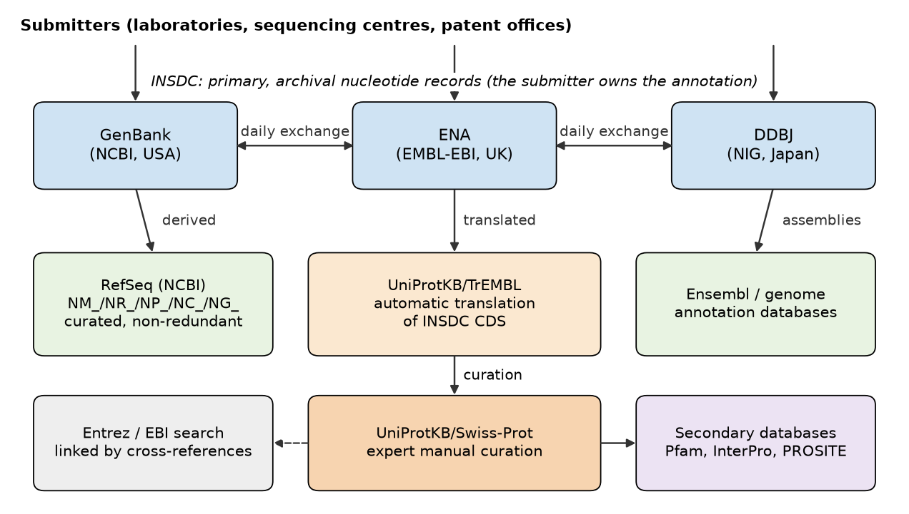
GenBank, ENA and DDBJ: the INSDC
The public nucleotide archive began in 1979–1982 at three places almost simultaneously: the EMBL Data Library in Heidelberg (now the European Nucleotide Archive, ENA, at EMBL-EBI near Cambridge, UK), GenBank in Los Alamos and later at the National Center for Biotechnology Information (NCBI) of the US National Library of Medicine, and the DNA Data Bank of Japan (DDBJ) at the National Institute of Genetics in Mishima. Since the late 1980s the three have operated as the International Nucleotide Sequence Database Collaboration.[2][3] The collaboration rests on one rule: a submitter deposits a sequence at one partner, which assigns the accession number, and every partner exchanges all new and updated records with the other two every day. The three databases therefore hold the same records, under the same accession numbers, and differ only in their user interfaces and in the flat-file format they present (GenBank format at NCBI and DDBJ, EMBL format at ENA).[4][5] A historical trace of this is visible in the record used below: the human β-globin mRNA V00497 was created in the EMBL Data Library on 9 June 1982, in release 1 of that database, and is retrievable today from GenBank under the same accession.
The archive is very large and grows continuously. GenBank publishes a full release every two months; release 274.0, dated 15 October 2026 and incorporating data processed by the INSDC up to 4 October 2026, contains 269,895,537 sequence records with 9,384,961,284,424 bases in its "traditional" divisions, plus 6,736,062,960 records with 56,003,937,587,326 bases in set-based projects (whole-genome shotgun, transcriptome shotgun and targeted locus studies), which are distributed separately (values read from the release notes, gbrel.txt, retrieved on 18 October 2026).[77] The release notes state that the number of bases has doubled approximately every 18 months since 1982; release 3 of December 1982 held 606 records and 680,338 bases (Figure 2). The Entrez Nucleotide database at NCBI, which adds RefSeq and other non-INSDC records to the GenBank content, reported 744,015,699 records on the same day.
Records are grouped into divisions, coded by three letters in the LOCUS line. Some divisions are taxonomic (PRI primates, ROD rodents, MAM other mammals, VRT other vertebrates, INV invertebrates, PLN plants and fungi, BCT bacteria, VRL viruses, PHG bacteriophages); others group records by the technique that produced them (EST expressed sequence tags, GSS genome survey sequences, HTC high-throughput cDNA, HTG high-throughput genomic, STS sequence-tagged sites, TSA transcriptome shotgun assemblies, ENV environmental samples, PAT patents, SYN synthetic constructs, UNA unannotated). Counting the per-division table of release 274.0 shows that the largest division by number of records is EST (78,202,766 records), followed by PAT (73,750,975) and GSS (41,103,736); the primate division, which contains the HBB records, holds 1,243,300 records. The division of a record is therefore a quick clue about its nature: an EST is a single-pass read and should not be treated as a finished sequence.
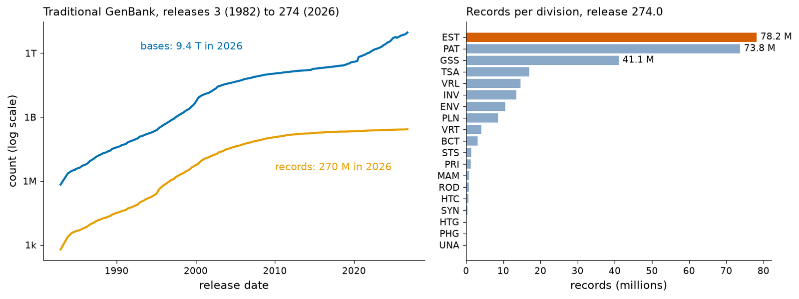
RefSeq: one reference record per molecule
Because INSDC is an archive, the human β-globin mRNA exists in it many times: as the 1982 cDNA V00497, as a full-length cDNA from a Japanese clone collection (AK311825), as thousands of ESTs, and inside every sequenced human genome. A clinician, a diagnostic laboratory or a genome browser needs instead one stable reference for each transcript and protein. NCBI's Reference Sequence project (RefSeq) provides it: for each organism with sufficient data, RefSeq selects, assembles and annotates a non-redundant set of genomic, transcript and protein records, either automatically or with review by NCBI staff.[6] RefSeq records are derived from INSDC data but are owned by NCBI, not by the original submitters, and they are not part of the INSDC exchange (the GenBank release notes say so explicitly). They are recognisable by an accession prefix of two letters and an underscore:
| Prefix | Molecule | Typical origin | Example |
|---|---|---|---|
| NC_ | complete genomic molecule (chromosome, organelle genome, plasmid, viral genome) | assembly | NC_000011.10 (human chromosome 11, GRCh38); NC_001422.1 (phage φX174) |
| NG_ | genomic region of a gene (RefSeqGene) or locus | curated | NG_059281.1 (HBB RefSeqGene); NG_000007.3 (β-globin locus) |
| NT_, NW_ | genomic contig or scaffold | assembly | — |
| NM_ | protein-coding transcript (mRNA) | curated or known | NM_000518.5 (HBB mRNA) |
| NR_ | non-coding transcript | curated or known | — |
| NP_ | protein | translation of NM_ or NC_ | NP_000509.1 (haemoglobin β) |
| XM_, XR_, XP_ | model transcript or protein predicted by the eukaryotic annotation pipeline | computational | — |
| WP_ | non-redundant bacterial protein shared by many genomes | computational | — |
The RefSeq record status in the COMMENT line tells how much human attention a record has received (in increasing order: MODEL, INFERRED, PREDICTED, PROVISIONAL, VALIDATED, REVIEWED). NM_000518.5 is REVIEWED and carries the keyword "MANE Select": it belongs to the Matched Annotation from NCBI and EMBL-EBI set, in which NCBI and Ensembl agreed on a single representative transcript for each human protein-coding gene, identical in sequence in both resources (here Ensembl ENST00000335295.4).[7] MANE Select transcripts are the recommended default for reporting clinical variants. A useful way to remember the difference: GenBank is the library of everything that was ever published; RefSeq is the reference shelf that the librarians maintain.
Clinical connection: which "HBB" does the laboratory report?
A genetic test report for a patient with suspected sickle-cell disease must state the variant against a versioned reference, for example NM_000518.5:c.20A>T, NP_000509.1:p.(Glu7Val) or the genomic position on NC_000011.10. The c. coordinate counts from the A of the ATG start codon, so c.20 is mRNA position 50 + 20 = 70, the middle base of codon 7 (GAG) in Figure 3. The protein coordinate p.Glu7Val counts the initiator methionine as residue 1, whereas the classical name "Glu6Val" counts residues of the mature chain, from which that methionine is removed. Both names describe the same mutation (dbSNP rs334); confusing the two numbering systems is a frequent source of error in reports and in the literature.[1][8]
dbEST: expressed sequence tags
An expressed sequence tag (EST) is a short (usually a few hundred bases), single-pass read from one end of a randomly picked cDNA clone. In 1991, Adams and colleagues proposed sequencing thousands of such tags from brain cDNA libraries as a fast way to discover human genes before the genome was available.[9] The idea was spectacularly productive, and in 1993 NCBI described dbEST, a dedicated database to hold the flood of tags.[10] Because each EST reports which genes are expressed in the tissue from which its library was made, ESTs were used to discover genes, to locate exons by aligning ESTs to genomic DNA, to estimate expression levels and tissue specificity, and to find alternative splicing and single-nucleotide polymorphisms. Clustering of ESTs produced the UniGene database. The reference HBB mRNA itself still shows this history: its RefSeq record was built from the cDNA AK311825.1 and the EST BU661647.1, a 650-base read (created 2 October 2002) from a library of human erythroid precursor cells.
The EST era is over, and the current status of dbEST must be stated precisely because many textbooks still describe it as a separate, active database. NCBI announced in 2018 that EST and GSS records would be merged into the Nucleotide database and that the separate EST and GSS Entrez databases would be retired; by July 2019 the change had been implemented, and NCBI stated that it would continue to accept EST and GSS submissions but would no longer provide special processes for them.[78][79] UniGene was retired in the same year. The data have not disappeared: they remain in the EST division of GenBank and are searchable in Nucleotide with the property gbdiv_est[PROP]. On 18 October 2026 that query returned 78,202,766 records, exactly the EST total of release 274.0, of which 8,705,630 are human mRNA-derived tags; an Entrez information request for a database called "est" now fails. Expression is studied today by RNA-seq, whose reads are deposited in the Sequence Read Archive (SRA; 47,251,905 records indexed in Entrez on the same day), and gene models are supported by RNA-seq alignments rather than by ESTs, as the evidence block of NM_000518.5 shows ("RNAseq introns :: single sample supports all introns").
Outdated statement to avoid
"To find out where a gene is expressed, search dbEST" was good advice in 2000. Today, ESTs are historical evidence. Use expression atlases built from RNA-seq (for example the GTEx portal or the EBI Expression Atlas) and treat a single EST as a low-quality, possibly chimeric, single read.
UniProtKB and the UniProt family of databases
Proteins have their own central resource, UniProt, run jointly by EMBL-EBI, the SIB Swiss Institute of Bioinformatics and the Protein Information Resource.[11] Its core is the UniProt Knowledgebase (UniProtKB), which has two sections. UniProtKB/TrEMBL (unreviewed) contains the automatic translations of the coding sequences annotated in INSDC and in genome projects, with automatically assigned annotation; it is large because it accepts essentially every predicted protein. UniProtKB/Swiss-Prot (reviewed) began in 1986 as Amos Bairoch's annotated protein database and contains entries that a biocurator has checked: sequence conflicts between submissions are resolved, function, subcellular location, variants, post-translational modifications and structures are extracted from the literature and attached to evidence codes, and only one entry is kept per protein per species.[12] UniProtKB/Swiss-Prot is therefore a curated database in the sense of Section 3.1.2, although, because it also contains sequences determined directly by protein chemistry, it is often listed together with the primary databases.
Around UniProtKB sit three further collections. UniParc is the archive of every distinct protein sequence ever seen in the source databases, each stored once with a UPI identifier and a history of where it appeared. UniRef clusters UniProtKB and selected UniParc sequences at 100 %, 90 % and 50 % identity, which makes similarity searches faster and less redundant.[13] Proteomes groups the proteins of each completely sequenced organism, with a selected set of reference proteomes chosen to represent the diversity of life. Counts retrieved from the UniProt REST API on 18 October 2026 (release 2026_03 of 2 September 2026) were:
| Collection | Entries |
|---|---|
| UniProtKB/Swiss-Prot (reviewed) | 575,748 |
| — of which Homo sapiens | 20,431 |
| UniProtKB/TrEMBL (unreviewed) | 149,430,635 |
| UniParc (distinct sequences) | 1,200,368,847 |
| UniRef100 / UniRef90 / UniRef50 clusters | 221,143,266 / 121,494,192 / 38,840,027 |
| Proteomes (of which reference proteomes) | 1,334,862 (37,190) |
The ratio is instructive: fewer than 4 of every 1,000 UniProtKB entries have been reviewed by a curator. When you retrieve a protein from a newly sequenced organism, its annotation is almost certainly automatic, inferred by similarity to the reviewed minority. The number of reviewed human entries (20,431) is close to the current number of human protein-coding genes, because Swiss-Prot keeps one entry per gene product; it replaces the figure of "about 100,000 human genes" found in older textbooks, which was an extrapolation made before the genome was sequenced.
Retrieving records: Entrez, EBI Search and programmatic access
Entrez is NCBI's integrated retrieval system: one search interface over many linked databases (on 18 October 2026 the E-utilities listed 38, among them Nucleotide, Protein, Gene, Structure, Taxonomy, SNP, ClinVar, SRA and PubMed), in which every record links to related records in the others.[14] Searches use field tags in square brackets, combined with Boolean operators: HBB[gene] AND "Homo sapiens"[orgn] AND refseq[filter] retrieves the human RefSeq records of the gene. Entrez is also accessible to programs through the E-utilities (esearch, efetch, esummary, elink), which is how Biopython's Bio.Entrez module works.[80] At EMBL-EBI, the ENA browser, EBI Search and dedicated REST interfaces (for example rest.uniprot.org, www.ebi.ac.uk/interpro/api and rest.ensembl.org) play the same role. Programmatic access matters because it makes an analysis reproducible: the code records exactly which records were retrieved, and when.
Try it yourself: retrieve and inspect a GenBank record with Biopython
Web: open NM_000518.5 at NCBI, click "FASTA" and then "GenBank" to switch views, and use "Send to → File" to download the record. Python: the following snippet fetches the same record through the E-utilities, counts its features, extracts the CDS and checks that its translation equals the one stored in the record.
import os
from collections import Counter
from Bio import Entrez, SeqIO
Entrez.email = os.environ.get("NCBI_EMAIL", "") # NCBI asks for a contact address: write yours here
with Entrez.efetch(db="nuccore", id="NM_000518", rettype="gb", retmode="text") as handle:
rec = SeqIO.read(handle, "genbank")
print(rec.id, "|", rec.description)
print("length:", len(rec), "| molecule:", rec.annotations["molecule_type"],
"| division:", rec.annotations["data_file_division"])
print("feature keys:", dict(Counter(f.type for f in rec.features)))
cds = next(f for f in rec.features if f.type == "CDS")
print("CDS location:", cds.location, "| protein_id:", cds.qualifiers["protein_id"][0])
protein = cds.extract(rec.seq).translate(to_stop=True)
print("own translation equals /translation:", str(protein) == cds.qualifiers["translation"][0])
print("first 30 aa:", protein[:30])Note that Biopython prints locations as [50:494](+): a Python-style, zero-based, half-open interval. It means the same as GenBank's one-based, closed 51..494. Converting between the two conventions is the most common source of off-by-one errors in bioinformatics.
Try it yourself: query UniProt through its REST API
from collections import Counter
import requests
entry = requests.get("https://rest.uniprot.org/uniprotkb/P68871.json", timeout=60).json()
print(entry["primaryAccession"], entry["uniProtkbId"], "|", entry["entryType"])
print("gene:", entry["genes"][0]["geneName"]["value"], "| organism:", entry["organism"]["scientificName"])
print("length:", entry["sequence"]["length"], "| sequence version:", entry["entryAudit"]["sequenceVersion"],
"| entry version:", entry["entryAudit"]["entryVersion"])
features = Counter(f["type"] for f in entry["features"])
print("features:", dict(features.most_common(6)))
xrefs = entry["uniProtKBCrossReferences"]
print("cross-references:", len(xrefs), "to", len({x["database"] for x in xrefs}), "databases;",
"PDB entries:", sum(x["database"] == "PDB" for x in xrefs))
for f in entry["features"]:
if f["type"] == "Natural variant" and "Hb S" in f.get("description", ""):
print("position", f["location"]["start"]["value"], f["alternativeSequence"]["originalSequence"], "->",
f["alternativeSequence"]["alternativeSequences"][0], "|", f["description"])The protein has a sequence version of 2 and an entry version of 219: its sequence has been corrected once since 1986, while its annotation has been revised 218 times.
Structure of a record I: the GenBank flat file, line by line
A GenBank record is a sequence of labelled blocks. Each block begins with a keyword in the first twelve columns (LOCUS, DEFINITION, ACCESSION…); continuation lines are indented; and the record ends with //. Below is the reference record of the human β-globin mRNA, NM_000518.5, exactly as returned by NCBI on 18 October 2026, with long repetitive parts replaced by bracketed notes. Read it once quickly, then go through the explanation that follows.
LOCUS NM_000518 628 bp mRNA linear PRI 06-SEP-2026
DEFINITION Homo sapiens hemoglobin subunit beta (HBB), mRNA.
ACCESSION NM_000518
VERSION NM_000518.5
KEYWORDS RefSeq; MANE Select.
SOURCE Homo sapiens (human)
ORGANISM Homo sapiens
Eukaryota; Metazoa; Chordata; Craniata; Vertebrata; Euteleostomi;
Mammalia; Eutheria; Euarchontoglires; Primates; Haplorrhini;
Catarrhini; Hominidae; Homo.
REFERENCE 1 (bases 1 to 628)
AUTHORS Civettini,I., Zappaterra,A., Corti,P., Messina,A., Aroldi,A.,
Biondi,A., Cavalca,F., Crippa,V., Crosti,F., Ferrari,G.M.,
Malighetti,F., Mologni,L., Piperno,A., Ramazzotti,D., Scollo,C.,
Zambon,A., Rossi,F. and Gambacorti-Passerini,C.
TITLE Hb Monza: A novel extensive HBB duplication with preserved
alpha-beta subunit interaction and unstable hemoglobin phenotype
JOURNAL Med 6 (4), 100554 (2025)
PUBMED 39701095
[... references 2 to 10 omitted ...]
COMMENT REVIEWED REFSEQ: This record has been curated by NCBI staff. The
reference sequence was derived from AK311825.1 and BU661647.1.
This sequence is a reference standard in the RefSeqGene project.
On Jun 13, 2018 this sequence version replaced NM_000518.4.
[... summary, evidence and attributes omitted ...]
PRIMARY REFSEQ_SPAN PRIMARY_IDENTIFIER PRIMARY_SPAN COMP
1-494 AK311825.1 1-494
495-628 BU661647.1 507-640
FEATURES Location/Qualifiers
source 1..628
/organism="Homo sapiens"
/mol_type="mRNA"
/db_xref="taxon:9606"
/chromosome="11"
/map="11p15.4"
gene 1..628
/gene="HBB"
/gene_synonym="beta-globin; CD113t-C; ECYT6"
/note="hemoglobin subunit beta"
/db_xref="GeneID:3043"
/db_xref="HGNC:HGNC:4827"
/db_xref="MIM:141900"
exon 1..142
/gene="HBB"
/gene_synonym="beta-globin; CD113t-C; ECYT6"
/inference="alignment:Splign:2.1.0"
misc_feature 30..32
/gene="HBB"
/gene_synonym="beta-globin; CD113t-C; ECYT6"
/note="upstream in-frame stop codon"
CDS 51..494
/gene="HBB"
/gene_synonym="beta-globin; CD113t-C; ECYT6"
/note="beta globin chain; hemoglobin, beta; hemoglobin
beta subunit; Hb Monza protein"
/codon_start=1
/product="hemoglobin subunit beta"
/protein_id="NP_000509.1"
/db_xref="CCDS:CCDS7753.1"
/db_xref="GeneID:3043"
/db_xref="HGNC:HGNC:4827"
/db_xref="MIM:141900"
/translation="MVHLTPEEKSAVTALWGKVNVDEVGGEALGRLLVVYPWTQRFFE
SFGDLSTPDAVMGNPKVKAHGKKVLGAFSDGLAHLDNLKGTFATLSELHCDKLHVDPE
NFRLLGNVLVCVLAHHFGKEFTPPVQAAYQKVVAGVANALAHKYH"
[... 37 further misc_feature and 2 mat_peptide features omitted ...]
exon 143..365
/gene="HBB"
/gene_synonym="beta-globin; CD113t-C; ECYT6"
/inference="alignment:Splign:2.1.0"
exon 366..628
/gene="HBB"
/gene_synonym="beta-globin; CD113t-C; ECYT6"
/inference="alignment:Splign:2.1.0"
regulatory 602..607
/regulatory_class="polyA_signal_sequence"
/gene="HBB"
/gene_synonym="beta-globin; CD113t-C; ECYT6"
/note="hexamer: AATAAA"
polyA_site 628
/gene="HBB"
/gene_synonym="beta-globin; CD113t-C; ECYT6"
/note="major polyA site"
ORIGIN
1 acatttgctt ctgacacaac tgtgttcact agcaacctca aacagacacc atggtgcatc
61 tgactcctga ggagaagtct gccgttactg ccctgtgggg caaggtgaac gtggatgaag
[... 8 further sequence lines ...]
601 taataaaaaa catttatttt cattgcaa
//
LOCUS gives the locus name (for RefSeq, the accession), the length (628 bp), the molecule type (mRNA; other values are DNA, RNA, ss-DNA, for example), the topology (linear or circular), the division (PRI) and the date of the last modification of the record, here 6 September 2026. The date changes whenever anything in the record changes, which is why it is recent although the sequence version is from 2018. DEFINITION is a one-line human-readable title following conventions (organism, product, gene symbol, molecule). ACCESSION is the stable accession; secondary accessions of merged records would follow it. VERSION is the accession.version that you must cite. KEYWORDS are controlled terms; "MANE Select" is the only biologically informative one here. SOURCE and ORGANISM give the common and scientific name and the full taxonomic lineage from the NCBI Taxonomy database.
Each REFERENCE block cites a publication or a direct submission, with the span of bases it supports (bases 1 to 628), AUTHORS, TITLE, JOURNAL and a PUBMED identifier; this record cites ten. In INSDC records the last reference is usually the direct submission. COMMENT is free text, but RefSeq uses it in a structured way: the status (REVIEWED), the source records (AK311825.1 and BU661647.1), the version history, a summary of gene function, a structured evidence block and the MANE attributes. PRIMARY is specific to RefSeq and says which INSDC record supplied each part of the reference sequence: bases 1–494 from the cDNA AK311825.1 and bases 495–628 from bases 507–640 of the EST BU661647.1.
FEATURES introduces the feature table, the annotation proper, which is the subject of Section 3.1.10. Here it contains a source feature (always present, describing the whole molecule: organism, molecule type, chromosome 11, cytogenetic band 11p15.4), a gene feature, three exon features inferred by spliced alignment with Splign, a misc_feature marking an in-frame stop codon upstream of the start codon (evidence that the CDS cannot start further upstream), the CDS with its translation, 37 further misc_features and two mat_peptides propagated from UniProtKB (modified residues and bioactive peptides), a regulatory feature for the polyadenylation signal AATAAA at 602..607 and the polyA_site at 628. Finally ORIGIN introduces the sequence, written in lower case in blocks of ten bases, sixty per line, each line preceded by the position of its first base.
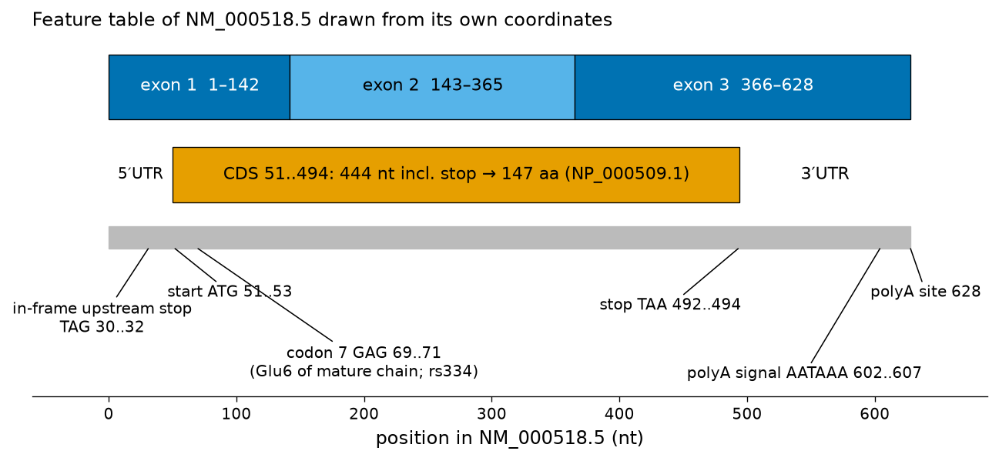
SeqIO.read(..., "genbank")) and the sequence labels were read from the sequence itself: exon 1 (1–142), exon 2 (143–365) and exon 3 (366–628); the CDS 51..494 (444 nt including the stop codon, encoding the 147-residue NP_000509.1); the in-frame upstream stop TAG at 30..32; the start ATG at 51..53; codon 7 (GAG, 69..71), which encodes Glu6 of the mature chain and is changed to GTG in HbS; the stop TAA at 492..494; the polyadenylation signal AATAAA at 602..607 and the major polyadenylation site at 628. The lengths of the UTRs (50 and 134 nt) follow from these coordinates.Pitfall: the mRNA record is a cDNA sequence
Nucleotide databases write RNA molecules with T, not U, because what was sequenced was complementary DNA. The molecule type "mRNA" in the LOCUS line, not the alphabet, tells you that the record represents a transcript.
Structure of a record II: the EMBL/ENA line-code format
ENA presents the same INSDC data in the EMBL flat-file format. Instead of keywords, every line starts with a two-letter line code, followed by three spaces; XX lines are spacers. The following excerpt is the oldest β-globin mRNA record in the archive, V00497, retrieved from the ENA browser API; it was created in release 1 of the EMBL Data Library on 9 June 1982.
ID V00497; SV 1; linear; mRNA; STD; HUM; 626 BP.
XX
AC V00497;
XX
DT 09-JUN-1982 (Rel. 01, Created)
DT 07-OCT-2008 (Rel. 97, Last updated, Version 10)
XX
DE Human messenger RNA for beta-globin.
XX
KW beta-globin; complementary DNA; globin.
XX
OS Homo sapiens (human)
OC Eukaryota; Metazoa; Chordata; Craniata; Vertebrata; Euteleostomi; Mammalia;
OC Eutheria; Euarchontoglires; Primates; Haplorrhini; Catarrhini; Hominidae;
OC Homo.
XX
RN [1]
RP 1-626
RX DOI; 10.1073/pnas.74.12.5618.
RX PUBMED; 271989.
RA Kafatos F.C., Efstratiadis A., Forget B.G., Weissman S.M.;
RT "Molecular evolution of human and rabbit beta-globin mRNAs";
RL Proc. Natl. Acad. Sci. U.S.A. 74(12):5618-5622(1977).
XX
[... 2 further reference blocks omitted ...]
DR MD5; 2c71544c6c57164d539dd8d6c43cc74c.
DR Ensembl-Gn; ENSG00000244734; homo_sapiens.
DR Ensembl-Tr; ENST00000335295; homo_sapiens.
DR Ensembl-Tr; ENST00000647020; homo_sapiens.
[... 8 further DR lines omitted ...]
CC KST HSA.BETGLOBIN (RNA)
XX
FH Key Location/Qualifiers
FH
FT source 1..626
FT /organism="Homo sapiens"
FT /mol_type="mRNA"
FT /db_xref="taxon:9606"
FT mRNA 1..626
FT /note="messenger RNA"
FT CDS 51..494
FT /note="reading frame"
FT /db_xref="GOA:P68871"
[... 263 further /db_xref qualifiers omitted ...]
FT /protein_id="CAA23756.1"
FT /translation="MVHLTPEEKSAVTALWGKVNVDEVGGEALGRLLVVYPWTQRFFES
FT FGDLSTPDAVMGNPKVKAHGKKVLGAFSDGLAHLDNLKGTFATLSELHCDKLHVDPENF
FT RLLGNVLVCVLAHHFGKEFTPPVQAAYQKVVAGVANALAHKYH"
FT misc_difference 535..535
FT /note="T is missing in [3]"
[...]
SQ Sequence 626 BP; 138 A; 157 C; 166 G; 165 T; 0 other;
acatttgctt ctgacacaac tgtgttcact agcaacctca aacagacacc atggtgcacc 60
tgactcctga ggagaagtct gcggttactg ccctgtgggg caaggtgaac gtggatgaag 120
[...]
taataaaaaa catttatttt cattgc 626
//
The correspondence with GenBank is direct: ID (identification: accession, sequence version SV 1, topology, molecule type, data class STD = standard, taxonomic division HUM = human, length) corresponds to LOCUS; AC to ACCESSION; DT gives two dates, creation and last update, with the release numbers, which GenBank compresses into one; DE is the DEFINITION; KW the KEYWORDS; OS/OC the organism and its classification. Each reference is a block of RN (number), RP (positions covered), RX (cross-references to DOI and PubMed), RA (authors), RT (title) and RL (location in the literature). DR lines are database cross-references (here an MD5 checksum of the sequence and links to Ensembl genes and transcripts); CC is a comment; FH is the feature-table header; FT lines carry the feature table, in exactly the same key/location/qualifier syntax as GenBank; SQ opens the sequence with its base composition (138 A, 157 C, 166 G, 165 T), and the sequence lines carry the position of the last base at the right-hand end, the opposite of GenBank. The record ends with //.
This old record also teaches something about archives. Aligning V00497 with the current reference NM_000518.5 (global alignment with Biopython's PairwiseAligner) shows that the 1982 sequence is 626 bases long, two bases shorter at the 3′ end, and differs from the reference at three positions, mRNA positions 59, 83 and 212. All three lie at the third position of a codon (codons 3, 11 and 54: CAT/CAC, GCC/GCG and GCT/GCA) and are synonymous, so the protein translated in V00497 is identical to NP_000509.1. Whether such differences are errors of 1970s sequencing or genuine variation in the person whose cDNA was cloned cannot be decided from the records alone; this is precisely why a curated reference sequence is needed, and why RefSeq built NM_000518 from other, more recent clones.
Try it yourself: the same record in three views
Open V00497 in the ENA browser and download it in EMBL format; then open V00497 at NCBI in GenBank format. Find in both views (1) the creation date, (2) the CDS location, (3) the first ten amino acids of the translation, and (4) the protein identifier (CAA23756.1). Biopython converts between the formats, as the next snippet shows for NM_000518; note that Biopython fills the EMBL ID line with generic values (division UNC) because RefSeq records have no EMBL division.
Structure of a record III: the UniProtKB flat file
UniProtKB uses a line-code format of the EMBL family, documented in its user manual.[81] The excerpt below is the Swiss-Prot entry for human haemoglobin β, P68871 (3,572 lines in total, of which 1,212 are FT lines and 1,042 DR lines).
ID HBB_HUMAN Reviewed; 147 AA.
AC P68871; A4GX73; B2ZUE0; P02023; Q13852; Q14481; Q14510; Q45KT0; Q549N7;
AC Q6FI08; Q6R7N2; Q8IZI1; Q9BX96; Q9UCD6; Q9UCP8; Q9UCP9;
DT 21-JUL-1986, integrated into UniProtKB/Swiss-Prot.
DT 23-JAN-2007, sequence version 2.
DT 02-SEP-2026, entry version 219.
DE RecName: Full=Hemoglobin subunit beta;
DE AltName: Full=Beta-globin;
DE AltName: Full=Hemoglobin beta chain;
DE Contains:
DE RecName: Full=LVV-hemorphin-7;
DE Contains:
DE RecName: Full=Spinorphin;
GN Name=HBB;
OS Homo sapiens (Human).
OC Eukaryota; Metazoa; Chordata; Craniata; Vertebrata; Euteleostomi; Mammalia;
OC Eutheria; Euarchontoglires; Primates; Haplorrhini; Catarrhini; Hominidae;
OC Homo.
OX NCBI_TaxID=9606;
RN [1]
RP NUCLEOTIDE SEQUENCE [GENOMIC DNA].
RX PubMed=1019344; DOI=10.1016/s0079-6603(08)60917-4;
RA Marotta C., Forget B., Cohen-Solal M., Weissman S.M.;
RT "Nucleotide sequence analysis of coding and noncoding regions of human
RT beta-globin mRNA.";
RL Prog. Nucleic Acid Res. Mol. Biol. 19:165-175(1976).
[... 152 further references omitted ...]
CC -!- FUNCTION: Involved in oxygen transport from the lung to the various
CC peripheral tissues. {ECO:0000269|PubMed:28066926}.
[... further comment topics omitted ...]
DR EMBL; M25079; AAA35597.1; -; mRNA.
DR EMBL; V00499; CAA23758.1; -; Genomic_DNA.
DR RefSeq; NP_000509.1; NM_000518.5.
DR PDB; 1A00; X-ray; 2.00 A; B/D=2-147.
DR PDB; 1A01; X-ray; 1.80 A; B/D=2-147.
DR AlphaFoldDB; P68871; -.
DR Ensembl; ENST00000335295.4; ENSP00000333994.3; ENSG00000244734.5.
DR Ensembl; ENST00000647020.1; ENSP00000494175.1; ENSG00000244734.5.
DR HGNC; HGNC:4827; HBB.
DR MIM; 140700; phenotype.
DR MIM; 141900; gene+phenotype.
DR InterPro; IPR000971; Globin.
DR InterPro; IPR009050; Globin-like_sf.
DR Pfam; PF00042; Globin; 1.
DR PROSITE; PS01033; GLOBIN; 1.
[... 1027 further DR lines omitted ...]
PE 1: Evidence at protein level;
KW 3D-structure; Acetylation; Congenital dyserythropoietic anemia;
KW Direct protein sequencing; Disease variant; Glycation; Glycoprotein; Heme;
KW Hereditary hemolytic anemia; Hypotensive agent; Iron; Metal-binding;
KW Oxygen transport; Phosphoprotein; Proteomics identification; Pyruvate;
KW Reference proteome; S-nitrosylation; Transport; Vasoactive.
FT INIT_MET 1
FT /note="Removed"
FT /evidence="ECO:0000250|UniProtKB:P02086,
FT ECO:0000269|PubMed:13872627"
FT CHAIN 2..147
FT /note="Hemoglobin subunit beta"
FT /id="PRO_0000052976"
FT DOMAIN 3..147
FT /note="Globin"
FT /evidence="ECO:0000255|PROSITE-ProRule:PRU00238"
FT BINDING 93
FT /ligand="heme b"
FT /ligand_id="ChEBI:CHEBI:60344"
FT /ligand_part="Fe"
FT /ligand_part_id="ChEBI:CHEBI:18248"
FT /note="proximal binding residue"
FT MOD_RES 2
FT /note="N-acetylvaline"
FT /evidence="ECO:0000250|UniProtKB:P02086"
[...]
FT VARIANT 7
FT /note="E -> V (in SKCA; Hb S; at heterozygosity confers
FT resistance to malaria; dbSNP:rs334)"
FT /evidence="ECO:0000269|PubMed:13464827,
FT ECO:0000269|PubMed:16001361, ECO:0000269|Ref.10"
FT /id="VAR_002863"
[...]
SQ SEQUENCE 147 AA; 15998 MW; A31F6D621C6556A1 CRC64;
MVHLTPEEKS AVTALWGKVN VDEVGGEALG RLLVVYPWTQ RFFESFGDLS TPDAVMGNPK
VKAHGKKVLG AFSDGLAHLD NLKGTFATLS ELHCDKLHVD PENFRLLGNV LVCVLAHHFG
KEFTPPVQAA YQKVVAGVAN ALAHKYH
//
The line types are: ID, the entry name (HBB_HUMAN, a mnemonic of protein and species), the status (Reviewed, i.e. Swiss-Prot) and the length (147 amino acids); AC, the primary accession P68871 followed by 15 secondary accessions of entries that were merged into this one (P02023 is the accession under which human β-globin was distributed for many years; secondary accessions keep old citations resolvable); DT, three dates: integration into Swiss-Prot (21 July 1986), last sequence change (sequence version 2, 23 January 2007) and last annotation change (entry version 219, 2 September 2026); DE, the recommended and alternative names and the names of peptides contained in the chain (LVV-hemorphin-7 and spinorphin, bioactive fragments); GN, the gene name; OS, OC and OX, organism, lineage and NCBI taxonomy identifier. References are RN/RP/RX/RA/RT/RL blocks, where RP states what the reference contributed (here the nucleotide sequence of genomic DNA; the entry cites 153 references in total).
CC lines are organised in topics introduced by -!- (FUNCTION, SUBUNIT, TISSUE SPECIFICITY, DISEASE, MASS SPECTROMETRY, SIMILARITY…), and every statement carries an evidence code in braces: ECO:0000269 means "experimental evidence used in manual assertion", followed by the PubMed identifier of the paper. DR lines link to nucleotide records (EMBL; RefSeq NP_000509.1/NM_000518.5), structures (PDB; each line gives the method, resolution and chains), the AlphaFold model, genome annotation (Ensembl), nomenclature (HGNC), diseases (MIM 141900 for the gene, 140700 for a phenotype) and family databases (InterPro, Pfam PF00042, PROSITE PS01033). PE is the protein-existence level, here 1 (evidence at protein level; level 2 is evidence at transcript level and so on down to 5, uncertain). KW are controlled keywords. FT is the feature table, which in UniProt uses residue positions and its own keys: INIT_MET (the initiator methionine is removed), CHAIN 2..147 (the mature protein), DOMAIN 3..147 (the globin domain, here propagated from a PROSITE rule — evidence ECO:0000255, "match to sequence model evidence used in manual assertion"), BINDING (the proximal histidine 93, which coordinates the haem iron), MOD_RES (modified residues), VARIANT (natural variants; the entry contains 261, among them the HbS variant at position 7, VAR_002863), HELIX, and others. SQ gives length, molecular weight (15998 Da) and a CRC64 checksum, followed by the sequence in blocks of ten.
Same grammar, different coordinates
UniProt numbers residues from the initiator methionine (Met1), so the sickle variant is at position 7 in UniProt and in HGVS protein nomenclature, but at position 6 in the classical haemoglobin literature, which numbers the mature chain. Nucleotide records number bases; protein records number residues. Before you combine positions from two sources, check which numbering each uses.
The feature table: keys, qualifiers and location syntax
The feature table is a shared language defined by the INSDC "Feature Table Definition" document[82], used identically by GenBank, ENA and DDBJ (and, with protein-specific keys, by UniProt). Each feature has three parts. The key says what kind of feature it is, chosen from a controlled list: source, gene, mRNA, CDS, exon, intron, 5'UTR, 3'UTR, regulatory (with a /regulatory_class such as promoter, enhancer, TATA_box or polyA_signal_sequence), polyA_site, mat_peptide, sig_peptide, misc_feature, repeat_region, mobile_element, variation, rep_origin and others. The location says where the feature lies. The qualifiers, written /name="value", describe it: /gene, /product, /protein_id, /codon_start, /transl_table (the genetic code used; 11 for bacteria and phages), /translation, /note, /db_xref, /evidence-type qualifiers such as /inference and /experiment, and many more. A CDS is the most heavily constrained feature: its location, /codon_start and /transl_table must reproduce exactly the protein written in /translation, and the INSDC validation software flags records in which they do not.
Location syntax
Locations use one-based, inclusive coordinates on the sequence of the record, and a small set of operators:
| Syntax | Meaning | Example |
|---|---|---|
467 | a single base | polyA_site 628 in NM_000518.5 |
a..b | a continuous range from base a to base b, inclusive | CDS 51..494 |
a^b | a site between two adjacent bases (for example a cleavage point) | — |
join(a..b,c..d) | the listed ranges are joined, in the order given, to form one contiguous sequence | CDS join(5051..5142,5273..5495,6346..6474) in NG_059281.1 |
complement(…) | the feature is on the opposite strand: take the reverse complement of the location | complement(join(5225598..5225726,5226577..5226799,5226930..5227021)) on NC_000011.10 |
order(a..b,c..d) | the ranges belong to one feature but no claim is made that they are joined (for example binding sites scattered over a region) | — |
<a..b, a..>b | the feature is partial: it begins before base a, or continues after base b, beyond what was sequenced | gene <255..>383, CDS <255..383 in PP393434.1 |
ACC.v:a..b | a location on another record (remote reference) | — |
Two rules need care. First, for complement(join(…)) the ranges are written in ascending order of coordinates, but the biological 5′→3′ order is the reverse; the sequence is obtained by joining the ranges and taking the reverse complement of the result, so the 5′ exon of HBB is the range with the highest coordinates on chromosome 11. Second, the partiality symbols are about knowledge, not biology: <255 in PP393434.1, a 936-bp amplicon of the HBB gene submitted in 2024, means that the coding sequence begins upstream of the region that was amplified, so neither the start codon nor exon 1 is in the record (the translation in the record starts with the residues LLGNVLV, encoded at the beginning of exon 3). Figure 4 draws these three real cases.
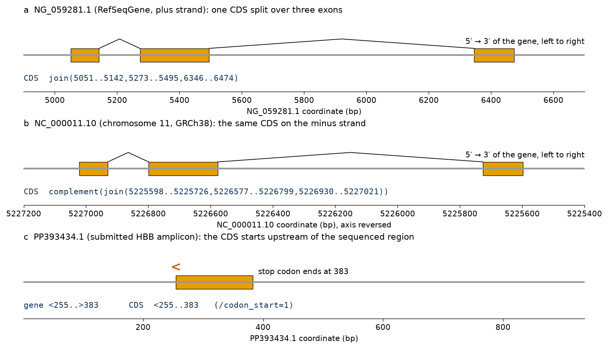
join(5051..5142,5273..5495,6346..6474); the three pieces add up to 444 nt. (b) On chromosome 11 (NC_000011.10, GRCh38) the gene lies on the minus strand, so the same CDS is written complement(join(5225598..5225726,5226577..5226799,5226930..5227021)); the axis is reversed so that the gene reads left to right, and the intron lengths (130 and 850 bp) are the same as in (a). Coordinates are from the Ensembl GFF3 of transcript ENST00000335295. (c) In the amplicon record PP393434.1 the CDS is <255..383: it is partial at its 5′ end and complete at its 3′ end, where the stop codon lies.Try it yourself: locations in Biopython
Biopython represents a location as a SimpleLocation (one range) or a CompoundLocation (a join), with zero-based, half-open coordinates; partial ends become special position objects (BeforePosition, AfterPosition). The method feature.extract(sequence) applies the whole location — joins, strand and all — and returns the feature's sequence.
import os
from Bio import Entrez, SeqIO
from Bio.SeqFeature import SimpleLocation, CompoundLocation
Entrez.email = os.environ.get("NCBI_EMAIL", "")
def fetch(acc):
with Entrez.efetch(db="nuccore", id=acc, rettype="gb", retmode="text") as h:
return SeqIO.read(h, "genbank")
gene = fetch("NG_059281")
cds = next(f for f in gene.features if f.type == "CDS")
print("Biopython location :", cds.location) # 0-based, half-open intervals
print("parts (1-based) :", [(int(p.start) + 1, int(p.end)) for p in cds.location.parts])
spliced = cds.extract(gene.seq) # joins the exon pieces in order
print("spliced CDS length :", len(spliced), "| ends with", spliced[-3:])
print("translation :", spliced.translate(to_stop=True)[:20], "...")
# the same CDS written on the minus strand of chromosome 11 (GRCh38 coordinates from Ensembl)
parts = [SimpleLocation(5225597, 5225726, strand=-1), SimpleLocation(5226576, 5226799, strand=-1),
SimpleLocation(5226929, 5227021, strand=-1)]
minus = CompoundLocation(parts[::-1]) # order of reading: 5' exon first
print("minus-strand form :", minus, "| length", len(minus))
partial = fetch("PP393434")
for f in partial.features:
if f.type in ("gene", "CDS"):
print(f.type, f.location, "| start is", type(f.location.start).__name__,
"| end is", type(f.location.end).__name__)One gene, many records: the β-globin locus
The same feature-table grammar describes whole genomic regions. NG_000007.3 is an 81,706-bp RefSeq record of the human β-globin locus. Its feature table annotates five functional globin genes in the order in which they are expressed during development — HBE1 (embryonic ε), HBG2 and HBG1 (fetal γ), HBD (δ) and HBB (adult β) — together with the pseudogene HBBP1, a non-coding RNA gene (BGLT3), an olfactory-receptor pseudogene, an endogenous retroviral element, and six DNase I hypersensitive sites (HS1, HS2, HS3, HS3.5, HS4 and HS5) that make up the locus control region (LCR), a set of enhancers 6–22 kb upstream of HBE1 that drive high-level, position-independent expression of the whole cluster.[15] Figure 5 was drawn directly from this feature table.
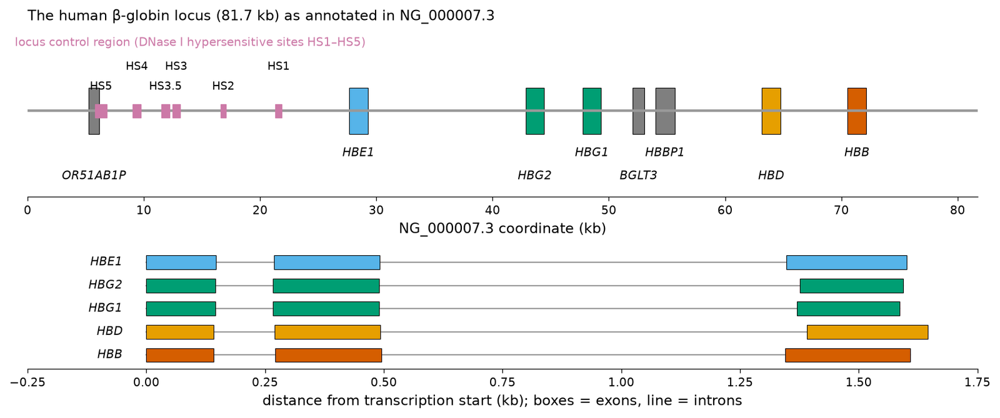
gene features (boxes; grey: pseudogenes and non-coding genes) and of the regulatory features of class DNase_I_hypersensitive_site (purple; HS1–HS5 of the locus control region). Bottom: the mRNA joins of the five functional genes, aligned at their first base. All five share the three-exon architecture of vertebrate globin genes, with a short first intron (122–130 bp) and a longer second intron (850–898 bp); exon 2 is 223 bp in all five. Drawn with matplotlib from coordinates parsed with Biopython.Key ideas of Section 3.1
- A database stores records with fixed fields and stable keys. Cite records by accession.version; the version changes only when the sequence changes.
- Primary (archival) databases store what submitters deposited; curated databases (RefSeq, Swiss-Prot) re-process it into one reviewed record per molecule; secondary databases store knowledge derived by analysis.
- GenBank, ENA and DDBJ form the INSDC and exchange all data daily. GenBank release 274.0 (October 2026) holds about 270 million traditional records and 9.4 trillion bases, plus set-based projects.
- RefSeq accessions have prefixes (NC_, NG_, NM_, NR_, NP_, XM_, XP_, WP_); MANE Select transcripts are the agreed clinical references.
- dbEST no longer exists as a separate database: ESTs live in the EST division of GenBank and are searched in Nucleotide.
- UniProtKB = Swiss-Prot (reviewed, about 0.58 million entries) + TrEMBL (unreviewed, about 149 million); UniParc, UniRef and Proteomes complete the family.
- GenBank uses keywords, EMBL and UniProt use two-letter line codes; the feature table (key, location, qualifiers) is the same language in all of them.
Section 3.2Annotation of nucleotide sequences
Curriculum: «Anotación de secuencias de nucleótidos. Formatos de secuencia. Localización de genes. Localización de elementos reguladores. Localización de secuencias codificantes. Localización de exones. Matrices de puntos (dot plots).» — Annotation of nucleotide sequences. Sequence formats. Localisation of genes. Localisation of regulatory elements. Localisation of coding sequences. Localisation of exons. Dot plots.
Annotation is the process of attaching biological meaning to positions in a sequence: "bases 51 to 494 encode a protein", "bases −33 to −19 bind TBP", "bases 143 to 365 form exon 2". Annotation combines two kinds of reasoning. Intrinsic (or ab initio) methods look only at the sequence itself and recognise signals (start and stop codons, splice sites, promoter motifs) and content statistics (codon usage, base composition) that distinguish functional elements from background. Extrinsic (or evidence-based) methods transfer information from other sequences: an mRNA or RNA-seq read aligned to the genome shows exactly where exons are; a protein from another species that aligns to a translated region shows that the region is coding. Modern pipelines combine both.
Sequence formats
A format is an agreement about how to write data in a file so that programs written by other people can read it. Some formats store only sequences, some store sequences with annotation, some store only annotation as coordinates on a reference, and some store reads with their base qualities. Choosing the right one is part of the analysis: converting a GenBank record to FASTA is trivial but throws away every feature; converting FASTA to GenBank cannot invent the features that were never there.
Plain (raw) sequence and FASTA
The simplest format is plain or raw sequence: the letters and nothing else. It carries no name, so it is suitable only for pasting into a web form. FASTA, introduced with the FASTA programs of Pearson and Lipman,[16] adds a header line that begins with >, followed by an identifier and an optional description; the sequence follows on one or more lines (conventionally 60 or 70 characters per line). A file may contain many records one after another (multi-FASTA). FASTA is the common language of sequence tools: BLAST, alignment programs and most web servers read it. The header is free text, and different databases use different conventions inside it (UniProt writes >sp|P68871|HBB_HUMAN Hemoglobin subunit beta OS=Homo sapiens OX=9606 GN=HBB PE=1 SV=2; NCBI writes the accession.version and the definition line).
The rich GenBank and EMBL flat files of Section 3.1 store sequence and annotation together and are the archival exchange formats; for genome-scale data, annotation is kept in separate files that refer to a FASTA reference by coordinates.
GFF3 and GTF
The General Feature Format version 3 (GFF3) is a tab-delimited text format with one feature per line and nine columns: sequence identifier, source, feature type (from the Sequence Ontology), start, end (one-based, inclusive), score, strand, phase (for CDS lines, the number of bases to skip to reach the first complete codon: 0, 1 or 2) and attributes (key=value pairs separated by semicolons, including ID and Parent, which link exons and CDS segments to their transcript, and transcripts to their gene). The excerpt below shows the canonical HBB transcript as served by the Ensembl REST API (attribute column shortened):
##gff-version 3 11 ensembl_havana mRNA 5225464 5227071 . - . ID=transcript:ENST00000335295;Name=HBB-201;Parent=gene:ENSG00000244734;biotype=protein_coding 11 ensembl_havana exon 5226930 5227071 . - . Name=ENSE00001829867;Parent=transcript:ENST00000335295;rank=1 11 ensembl_havana exon 5226577 5226799 . - . Name=ENSE00001057381;Parent=transcript:ENST00000335295;rank=2 11 ensembl_havana exon 5225464 5225726 . - . Name=ENSE00001600613;Parent=transcript:ENST00000335295;rank=3 11 ensembl_havana CDS 5226930 5227021 . - 0 ID=CDS:ENSP00000333994;Parent=transcript:ENST00000335295 11 ensembl_havana CDS 5226577 5226799 . - 1 ID=CDS:ENSP00000333994;Parent=transcript:ENST00000335295 11 ensembl_havana CDS 5225598 5225726 . - 0 ID=CDS:ENSP00000333994;Parent=transcript:ENST00000335295
Notice that the minus-strand gene is described with ascending coordinates and a - in column 7, that the exon rank (rank=1 is the 5′ exon) runs from the highest coordinate downwards, and that the second CDS segment has phase 1, because exon 1 ends after the first base of a codon (92 coding bases = 30 codons + 2 bases, so the next segment must skip 1 base to complete the split codon). GTF (Gene Transfer Format, also called GFF2.5) is an older dialect with the same nine columns but different attribute syntax (gene_id "…"; transcript_id "…";), still used by RNA-seq tools such as many quantification programs.
BED
The Browser Extensible Data (BED) format, introduced with the UCSC Genome Browser,[17] is the minimal interval format: chromosome, start, end, and optionally name, score and strand, with zero-based, half-open coordinates. The three HBB exons above, in BED:
chr11 5225463 5225726 HBB-201_exon3 0 - chr11 5226576 5226799 HBB-201_exon2 0 - chr11 5226929 5227071 HBB-201_exon1 0 -
Compare the first line with the GFF3 exon of rank 3: GFF3 start 5225464 becomes BED start 5225463 because BED counts from zero, while the end, 5225726, is the same in both because BED ends are exclusive. Getting this conversion wrong shifts every feature by one base.
FASTQ
Sequencing instruments produce reads, and each base of a read has a quality score. The FASTQ format stores both in four lines per read: @identifier, the bases, a + separator, and a quality string of the same length in which each character encodes the Phred quality Q of the base above it as the character with ASCII code Q + 33.[18] The Phred quality is defined as Q = −10 log10 P, where P is the estimated probability that the base call is wrong, so Q = 30 means one error in 1,000.[19] The first two reads of an Illumina MiSeq run (SRR31774605, deposited in SRA/ENA by a study that applied prime editing to the γ-globin promoters of haematopoietic stem cells from patients with sickle-cell disease) look like this:
@SRR31774605.1 M02111:151:000000000-LCBKT:1:1101:15761:1723/3 TCGCGTATACCGTTATTAACATATGACAACTCAAATCACCGACTGCCCATAGTGAGGTCTCCAGTCACTAAGGCGAATCTCGTTTTCCGTCTTCTTCTTTTAAAAATTTTTTTTTTTTTTTTTTTTTTTTTTTTTTTTTTTTTTTTTTTTT + AAAABDDAFFFBGGGGGGFG5GBHHGHFFHHHCBFGEGFFECEF?FGFBGF3555313BDFE53FA3AF5333B000EEB@1B1B1B@1B?BF4B44BB444334303344/////////--<-----:----999-9-----9------- @SRR31774605.2 M02111:151:000000000-LCBKT:1:1101:15879:1735/3 TGCTATGCTGTTTCCAGCATAGCTCCGAAACTCCATACCGTTATTAACATATGACAACTCAAATCACCGACTGCCCATAGTGTGGTCTCCAGTCACTATTGCGAATCTCGTTTGCCGTCTTCTTCTTGAAAAAAATTTTTTTTTTTTTTTT + AAABBFFFFFFFGGGGGGGGDDFHHGEAEEEHGFFHHHHDGGDHHFBGBGFG55A35ABF3A3FE3AA10AA1FFGCGF3555512BBED33F33@B4443@1//>1B40?/?/3?/E<GF4B44BF343330//02222///<-<--::-
Try it yourself: decode FASTQ qualities
The snippet downloads only the first 200 kB of the compressed file (an HTTP range request) and parses 100 complete reads with Biopython.
import gzip, io, zlib, requests
from Bio import SeqIO
url = "https://ftp.sra.ebi.ac.uk/vol1/fastq/SRR317/005/SRR31774605/SRR31774605_1.fastq.gz"
chunk = requests.get(url, headers={"Range": "bytes=0-200000"}, timeout=60).content # first ~200 kB only
text = zlib.decompressobj(16 + zlib.MAX_WBITS).decompress(chunk).decode()
records = text.splitlines()[:400] # 100 complete reads (4 lines each)
reads = list(SeqIO.parse(io.StringIO("\n".join(records) + "\n"), "fastq"))
r = reads[0]
print(r.id, "| length", len(r))
print("first 10 bases :", r.seq[:10])
print("quality chars :", records[3][:10])
print("Phred scores :", r.letter_annotations["phred_quality"][:10])
print("error prob. :", [round(10 ** (-q / 10), 4) for q in r.letter_annotations["phred_quality"][:5]])
mean_q = sum(sum(x.letter_annotations["phred_quality"]) for x in reads) / sum(len(x) for x in reads)
print(f"{len(reads)} reads, mean Phred quality {mean_q:.1f}")The character A has ASCII code 65, so its quality is 65 − 33 = 32, an error probability of 10−3.2 ≈ 0.0006. The poly-T tail and the - and / characters at the end of the first read (Q 12–14) are typical of the low-quality end of an Illumina read.
SAM, BAM and CRAM
When reads are aligned to a reference genome, the result is stored in the Sequence Alignment/Map (SAM) format, a tab-delimited text file with a header (lines beginning with @) and one line per alignment with eleven mandatory fields: read name, a bitwise FLAG (paired, reverse strand, unmapped…), reference name, one-based leftmost position, mapping quality, CIGAR string, mate information (three fields), read sequence and qualities.[20] The CIGAR string describes the alignment compactly: M aligned bases, I insertion, D deletion, N skipped reference (an intron, in a spliced alignment), S soft clip. The following SAM record was written by our code from the spliced alignment of the HBB mRNA to its gene that is computed in Section 3.2.5; it shows how three exons separated by two introns are expressed as 142M130N223M850N263M (sequence field shortened for display):
@SQ SN:NG_059281.1 LN:10106 NM_000518.5 0 NG_059281.1 5001 60 142M130N223M850N263M * 0 0 ACATTTGCTTCTGACACAACTGTGTTCACT...(628 nt) *
BAM is the compressed binary equivalent of SAM, sorted and indexed for fast access to any genomic region; CRAM compresses further by storing only the differences between each read and the reference, which makes files substantially smaller but requires the exact reference sequence to decompress them.[21] Clinical sequencing laboratories archive patient data in BAM or CRAM.
VCF
The Variant Call Format (VCF) stores the differences between a sample and the reference: one line per variant site with chromosome, position, identifier, reference allele, alternative allele(s), quality, filter status and an INFO field, followed by per-sample genotype columns.[22] The sickle-cell variant, at the position given by Ensembl for rs334 on GRCh38 (where the reference base, retrieved from Ensembl, is T), would be written:
##fileformat=VCFv4.2 ##reference=GRCh38 #CHROM POS ID REF ALT QUAL FILTER INFO 11 5227002 rs334 T A . . GENE=HBB;HGVSc=NM_000518.5:c.20A>T;HGVSp=NP_000509.1:p.Glu7Val
The genomic change T>A on the plus strand of chromosome 11 is the same event as c.20A>T in the minus-strand gene: VCF always describes the plus strand of the reference, whereas HGVS c. nomenclature describes the transcript.
Try it yourself: format conversion with Biopython
SeqIO.convert or a read/write pair converts between sequence formats; annotation formats such as BED and GFF3 are simple enough to write directly from parsed features.
import io, os
from Bio import Entrez, SeqIO
Entrez.email = os.environ.get("NCBI_EMAIL", "")
with Entrez.efetch(db="nuccore", id="NM_000518", rettype="gb", retmode="text") as h:
rec = SeqIO.read(h, "genbank")
for fmt in ["fasta", "embl"]:
buf = io.StringIO(); SeqIO.write(rec, buf, fmt)
lines = buf.getvalue().splitlines()
print(f"--- {fmt}: {len(lines)} lines; first 3 ---")
print("\n".join(l[:78] for l in lines[:3]))
cds = next(f for f in rec.features if f.type == "CDS")
# a minimal BED line (0-based start, end-exclusive) and GFF3 line (1-based, inclusive) for the CDS
print("BED :", "\t".join([rec.id, str(int(cds.location.start)), str(int(cds.location.end)), "HBB_CDS", "0", "+"]))
print("GFF3:", "\t".join([rec.id, "RefSeq", "CDS", str(int(cds.location.start) + 1), str(int(cds.location.end)),
".", "+", "0", "ID=cds-NP_000509.1;gene=HBB"]))| Format | Contains | Typical use | Coordinates |
|---|---|---|---|
| raw / plain | sequence only | pasting into web forms | — |
| FASTA | name + sequence | input of almost every tool | — |
| GenBank / EMBL | sequence + metadata + feature table | archival records, single genes | 1-based closed |
| GFF3 / GTF | features on a reference | genome annotation | 1-based closed |
| BED | intervals on a reference | browser tracks, peaks, targets | 0-based half-open |
| FASTQ | reads + base qualities | raw sequencing output | — |
| SAM / BAM / CRAM | read alignments | mapped sequencing data | 1-based |
| VCF | variants vs reference + genotypes | variant calling, clinical genomics | 1-based |
Localisation of genes
To locate a gene means to find, in a genomic sequence, the region that is transcribed and, for protein-coding genes, the exact codons that are translated. How difficult this is depends dramatically on the organism (Figure 6). In prokaryotes and their viruses, genes are dense and uninterrupted: a protein-coding gene is a single open reading frame from a start codon (ATG, and less often GTG or TTG) to a stop codon, preceded by a ribosome-binding site (Shine–Dalgarno sequence) a few bases upstream of the start, and often co-transcribed with neighbouring genes in an operon. Most of a bacterial genome is coding, so long ORFs are rarely there by chance. In eukaryotes, and particularly in vertebrates, a gene is a mosaic of exons separated by introns that are often much longer than the exons; the transcription start site, the start codon, the splice sites and the polyadenylation site all have to be found; genes are separated by long intergenic regions; and coding exons make up only a small fraction of the genome. The human β-globin gene in NG_059281.1 occupies 1,608 bp (5001–6608), of which 444 bp (28 %) are coding; for many human genes, whose introns span tens of kilobases, the coding fraction is far smaller.
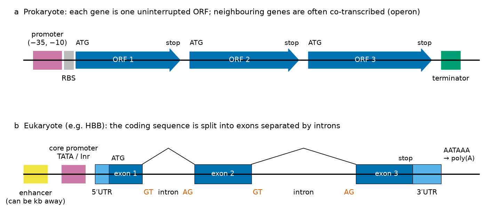
Ab initio gene prediction
Ab initio gene finders model the statistical properties of genes and use them to parse a genome into genes and non-genes. For prokaryotes, the dominant tools are GeneMark (and its self-training version GeneMarkS, which learns the model from the genome being annotated),[23] Glimmer, which scores ORFs with interpolated Markov models of coding sequence,[24] and Prodigal, which combines coding statistics with a careful model of start codons and ribosome-binding sites and is the default in many bacterial annotation pipelines.[25] These programs find the large majority of bacterial genes correctly at the level of the stop codon; the start codon is harder, as the φX174 example in Section 3.2.4 shows. For eukaryotes, GENSCAN introduced in 1997 a generalised hidden Markov model whose states represent exons of different types, introns, UTRs, promoters and intergenic regions, with explicit length distributions and splice-site models;[26] AUGUSTUS extended this approach with better intron models and the ability to incorporate external evidence ("hints").[27] Ab initio prediction in vertebrates remains error-prone: exons are found more reliably than complete genes, and untranslated exons and alternative isoforms are largely invisible to it.
Evidence-based (homology-based) prediction
The most reliable evidence that a region is a gene is that its transcript has been observed. Aligning cDNAs, ESTs or RNA-seq reads to the genome with a spliced aligner (Section 3.2.5) gives exon coordinates directly. Aligning proteins from related species to the translated genome (for example with tools of the BLAST family, discussed in Unit 4A) identifies coding exons even when the transcript has not been sequenced in the organism of interest. Comparative genomics adds a third line of evidence: coding exons are conserved between species, and they evolve with a characteristic pattern in which the third codon position changes more often than the first two.
Annotation pipelines
Large databases annotate genomes with automated pipelines that combine all these sources. The NCBI Prokaryotic Genome Annotation Pipeline (PGAP) combines protein-family models with ab initio prediction by a GeneMark-family program to annotate every bacterial and archaeal genome submitted to GenBank.[28] The NCBI Eukaryotic Genome Annotation Pipeline aligns RefSeq and INSDC transcripts, RNA-seq data and proteins, adds ab initio predictions where evidence is incomplete, and produces the XM_/XP_ model records. The Ensembl gene annotation system follows a similar logic, and for human and mouse it is merged with manual annotation by the HAVANA group (hence the source "ensembl_havana" in the GFF3 above).[29][30]
Common misconception: "the computer finds the genes"
A gene prediction is a hypothesis. A predicted gene in a newly sequenced bacterium labelled "hypothetical protein" may be a real gene of unknown function or a spurious ORF; a predicted human gene without transcript evidence (an XM_ record with status MODEL) may be a pseudogene. The annotation of a gene is only as good as the evidence listed in its record; read the /inference, /experiment and COMMENT fields before trusting it.
Localisation of regulatory elements
Genes are not expressed all the time and everywhere: β-globin is made in enormous amounts in erythroid precursors and not at all in neurons. This specificity is encoded in regulatory elements, short DNA segments recognised by transcription factors (TFs), proteins that bind specific sequences and recruit or block the transcription machinery. Locating regulatory elements is harder than locating coding sequences, for three reasons: the sites are short (typically 6–20 bp), they are degenerate (a factor binds a family of similar sequences rather than one exact word), and whether a site is used depends on the cell type, on chromatin and on neighbouring sites.
The core promoter
The core promoter is the region, roughly −40 to +40 relative to the transcription start site (TSS, position +1; there is no position 0), where RNA polymerase II and the general transcription factors assemble. Its best-known element is the TATA box, a sequence of the type TATAWAWR (W = A or T, R = A or G) centred about 30 bp upstream of the TSS and bound by the TATA-binding protein (TBP). The initiator (Inr), which overlaps the TSS (consensus YYANWYY in human, with the A at +1), and downstream elements complete the core promoter. Only a minority of human promoters have a TATA box; it is characteristic of strongly expressed, tissue-specific genes such as the globins. Proximal promoter elements lie within a few hundred base pairs upstream: in the β-globin promoter they include a CCAAT box (bound by NF-Y) and two CACCC boxes bound by the erythroid factor KLF1 (also called EKLF), which was discovered precisely as the protein that binds the β-globin CACCC box.[31] Saturation mutagenesis of the β-globin promoter showed that the TATA, CCAAT and CACCC elements are each needed for full activity.[32]
CpG islands
In vertebrate genomes the dinucleotide CpG is rare, because methylated cytosines in CpG mutate frequently to thymine by deamination. CpG dinucleotides are found at the expected frequency only in CpG islands, regions of a few hundred to a few thousand base pairs that are usually unmethylated and overlap the promoters of most housekeeping and many developmental genes. The original operational definition, by Gardiner-Garden and Frommer, is a region of at least 200 bp with G+C content above 50 % and a ratio of observed to expected CpG above 0.6;[33] Takai and Jones proposed stricter criteria (at least 500 bp, G+C ≥ 55 %, observed/expected ≥ 0.65) to exclude Alu repeats.[34]
Applying these definitions to two RefSeqGene records illustrates the two classes of promoter (Figure 7). In the region −1000 to +500 around the TSS, the erythroid-specific HBB has 43.2 % G+C, 10 CpG dinucleotides and an observed/expected ratio of 0.143: no CpG island. The housekeeping gene GAPDH (NG_007073.2) has 67.3 % G+C, 108 CpG dinucleotides and a ratio of 0.636 in the same window, and a sliding-window scan finds a CpG island from −572 to +1043 that also satisfies the Takai–Jones criteria (−567 to +1152). The absence of a CpG island at HBB fits its tissue-restricted, TATA-dependent promoter.
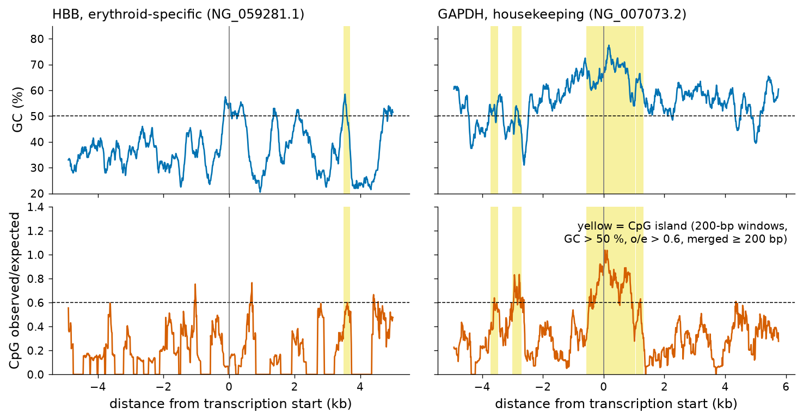
Enhancers, silencers and insulators
Enhancers are regulatory elements that increase transcription independently of their orientation and at variable distances, often tens of kilobases away from the promoter they regulate, by looping of the chromatin. The β-globin locus control region (Figure 5) is the classic example: its hypersensitive sites lie 6 to 22 kb upstream of HBE1 and more than 50 kb from HBB. Silencers repress transcription, and insulators block the action of enhancers on genes beyond them. Such elements cannot be found from sequence alone with any reliability. They are mapped experimentally by marks of open chromatin (DNase I hypersensitivity, as for the LCR; ATAC-seq today), by histone modifications associated with active enhancers, and by chromatin immunoprecipitation followed by sequencing (ChIP-seq) of transcription factors. The ENCODE project has produced these data for hundreds of human and mouse cell types and summarised them as a registry of candidate cis-regulatory elements (cCREs).[35]
Transcription-factor binding sites and position weight matrices
How can a computer recognise a degenerate binding site? Suppose we have aligned many real binding sites of one factor. A consensus sequence (for TBP, TATAWAWR) summarises them but loses information: it treats every allowed base as equally good and every other base as forbidden. A position frequency matrix (PFM, or count matrix) keeps everything: for each position j of the site and each base b it records the count nb,j of sites with base b at position j. JASPAR, the open-access database of curated TF-binding profiles, stores exactly these matrices, derived from SELEX, ChIP-seq and other experiments.[36] The TBP profile MA0108.2 used below derives from Bucher's 1990 weight-matrix analysis of eukaryotic RNA polymerase II promoters and contains 389 aligned TATA-box sites.[37]
To score a candidate site, the counts are converted into a position weight matrix (PWM), whose entries are log-odds scores:[38]
The score S(x) is the logarithm of the ratio between the probability of the word under the site model and under the background model, so a score of 10 bits means the word is 210 ≈ 1,000 times more likely to have been generated by the site model. The pseudocount prevents a base never observed at some position from receiving a score of −∞. Because different matrices have different ranges, scores are often reported as a relative score, (S − Smin)/(Smax − Smin), where Smax and Smin are the best and worst possible scores; thresholds of 80–85 % are common.
Scanning the HBB promoter (positions −300 to +50 of NG_059281.1) on both strands with four JASPAR matrices recovers the classical elements (Figure 8). The TBP matrix gives its single best score, 10.96 bits (relative score 90.5 %; possible range −34.64 to 15.75 bits), to the window starting at −33, GCATAAAAGTCAGGG, which contains the TATA box CATAAAA. The KLF1 matrix (MA0493.2, derived from human ChIP-seq) scores 96.0 % on the minus strand at −93, the proximal CACCC box (CCACACCCT on the plus strand), and 86.5 % at −108, the distal CACCC box (CCTCACCCT). The NF-Y matrix (MA0060.3) scores best, 83.6 %, at the CCAAT box (window GGCCAATCTAC starting at −78). The GATA1 matrix finds nothing above 80 % in the proximal promoter: GATA1 acts on the β-globin gene mainly through the LCR.
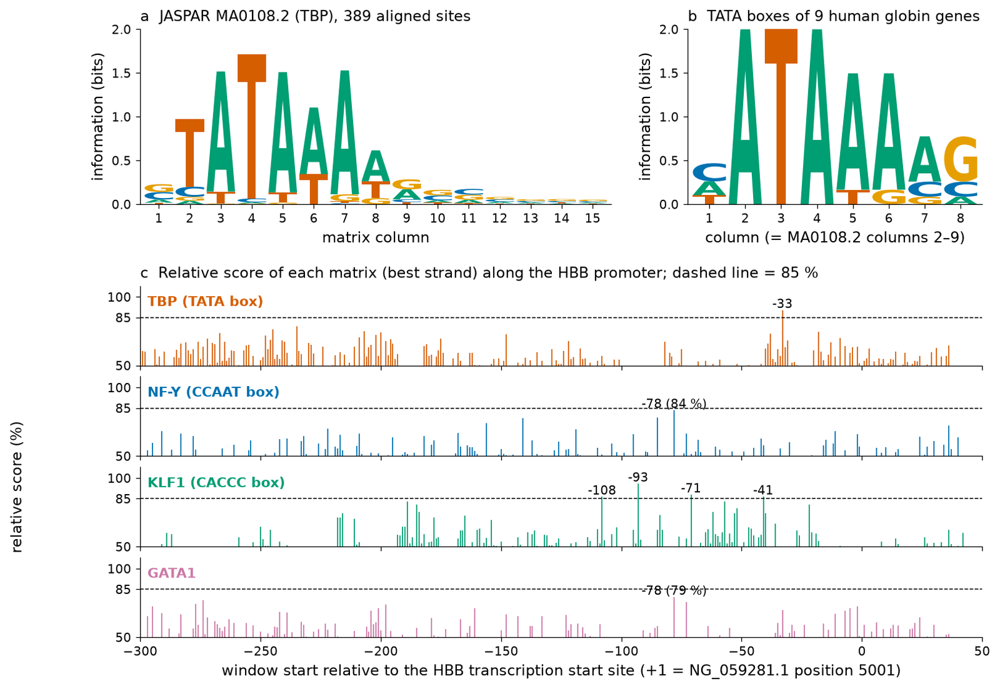
| Gene | Site | Position | Score (bits) |
|---|---|---|---|
| HBE1 | AATAAAAG | −29 | 8.29 |
| HBG2, HBG1 | AATAAAAG | −31 | 8.29 |
| HBD, HBB | CATAAAAG | −32 | 9.57 |
| HBZ | TATATAAG | −30 | 11.08 |
| HBM | TATAAGGA | −29 | 6.09 |
| HBA2, HBA1 | CATAAACC | −29 | 2.81 |
| HBQ1 | no TATA-like site (best score −1.73 on the minus strand) | — | — |
| Counts A / C / G / T | pos1 3/4/0/2 · pos2 9/0/0/0 · pos3 0/0/0/9 · pos4 9/0/0/0 · pos5 8/0/0/1 · pos6 8/0/1/0 · pos7 6/2/1/0 · pos8 1/2/6/0 | ||
Try it yourself: build a PWM and scan a promoter
Web: in JASPAR, search "TBP", open MA0108.2 and look at its count matrix and logo; then use the "Scan" function with the HBB promoter sequence. Python:
import math, os, requests
from Bio import Entrez, SeqIO
from Bio.Seq import Seq
pfm = requests.get("https://jaspar.elixir.no/api/v1/matrix/MA0108.2/?format=json", timeout=60).json()["pfm"]
width = len(pfm["A"])
# position weight matrix: log2( (count + sqrt(N)/4) / (N + sqrt(N)) / 0.25 )
pwm = []
for j in range(width):
N = sum(pfm[b][j] for b in "ACGT"); pc = math.sqrt(N)
pwm.append({b: math.log2(((pfm[b][j] + pc * 0.25) / (N + pc)) / 0.25) for b in "ACGT"})
best = sum(max(col.values()) for col in pwm); worst = sum(min(col.values()) for col in pwm)
print(f"TBP matrix: {width} columns, maximum score {best:.2f} bits, minimum {worst:.2f} bits")
Entrez.email = os.environ.get("NCBI_EMAIL", "")
with Entrez.efetch(db="nuccore", id="NG_059281", rettype="fasta", retmode="text") as h:
gene = str(SeqIO.read(h, "fasta").seq)
tss = 5001 # first base of the HBB mRNA in NG_059281
promoter = gene[tss - 1 - 300: tss - 1 + 50] # positions -300 ... +50
hits = []
for strand, s in [("+", promoter), ("-", str(Seq(promoter).reverse_complement()))]:
for i in range(len(s) - width + 1):
word = s[i:i + width]
score = sum(pwm[j][c] for j, c in enumerate(word))
start = i if strand == "+" else len(s) - i - width
rel = start - 300 if start - 300 < 0 else start - 299 # no position 0
hits.append((score, rel, strand, word))
for score, rel, strand, word in sorted(hits, reverse=True)[:3]:
print(f"{score:6.2f} bits rel. {100 * (score - worst) / (best - worst):5.1f} % at {rel:4d} ({strand}) {word}")The same scan over the whole 10,106-bp NG_059281.1 record finds 19 windows with a TBP relative score ≥ 85 %, but only one of them lies in the true promoter. For KLF1 the corresponding numbers are 18 genome-wide and 4 in the promoter; for GATA1, 27 and none.
Going further: information content and the expected number of chance hits
The information content of column j is Ij = 2 + Σb fb,j log2 fb,j bits (for a uniform background). For MA0108.2, columns 2–7 (the TATAAA core) carry 0.98, 1.52, 1.72, 1.51, 1.11 and 1.53 bits, while columns 10–15 carry less than 0.2 bits each; the total is about 10.1 bits. A motif with I bits of information is expected to occur by chance about once every 2I positions per strand, here roughly once every 1,100 bp; in the 10,106-bp record scanned on both strands one therefore expects of the order of 18 chance matches, close to the 19 windows that the scan reported. Wasserman and Sandelin called this the futility theorem: almost every predicted site of a single matrix in a large region is non-functional.[38] Predictions become useful only when combined with other evidence: position relative to the TSS, conservation between species, clustering of sites for co-operating factors, and experimental maps of open chromatin and TF occupancy.
Clinical connection: regulatory DNA in haemoglobin disorders
Regulatory variants can cause disease without changing a single amino acid. Point mutations in the TATA, CCAAT and CACCC elements of the β-globin promoter reduce transcription and are among the causes of β+-thalassaemia, and KLF1 itself is mutated in some patients with altered globin expression. Conversely, regulatory DNA is now a therapeutic target: a CRISPR-based therapy for sickle-cell disease and β-thalassaemia (exagamglogene autotemcel) disrupts an erythroid-specific enhancer of BCL11A, a repressor of the fetal γ-globin genes, in the patient's own haematopoietic stem cells, so that fetal haemoglobin is produced again and compensates for the defective β chain.[39][40] The FASTQ reads shown in Section 3.2.1 come from a related strategy, prime editing of the γ-globin promoters themselves.
Localisation of coding sequences
A coding sequence (CDS) is the part of a transcript (or of the genome, if the gene has no introns) that is translated into protein, from the start codon to the stop codon inclusive. Finding coding sequences relies on two kinds of evidence: the existence of a long open reading frame, and the statistical signature of coding.
Six-frame translation and open reading frames
Because the genetic code is read in non-overlapping triplets, any DNA sequence can be translated in three reading frames on each strand: six frames in total. A stop codon (TAA, TAG or TGA in the standard code) ends translation, so a protein-coding region appears as a long stretch of codons without a stop in one frame: an open reading frame (ORF). In the strict sense used by most ORF finders, an ORF runs from an ATG start codon to the next in-frame stop codon. In random sequence with equal base frequencies, the probability that a codon is not a stop is 61/64, so the probability that n consecutive codons contain no stop is (61/64)n: 0.091 for 50 codons, 0.0082 for 100 codons and 0.00086 for 147 codons (the number of sense codons in the β-globin CDS, which has 148 codons including its stop). Long ORFs are therefore unlikely to arise by chance, and ORF length is the oldest and simplest gene-finding statistic.
The HBB mRNA (628 nt) contains nine ATG-initiated ORFs in its six frames, but only two of at least 30 codons: the true CDS, 51..494 (148 codons including the stop, in the third frame of the plus strand), and a 39-codon ORF at 115..234 in the first plus frame, which lies inside the CDS in another frame and is not translated. NCBI's ORFfinder reports such ORFs graphically; the choice of the real CDS is supported by its length, by the upstream in-frame stop codon at 30..32 that closes the frame before the ATG, by the Kozak context of the start codon (ACACCATGG, with A at −3 and G at +4), and, decisively, by the protein sequence determined directly from haemoglobin.
Genomes of bacteria and phages make the limits of ORF finding visible. The circular 5,386-nt genome of bacteriophage φX174 (NC_001422.1), the first DNA genome ever sequenced, has 11 annotated CDS. Our six-frame ORF finder (ATG to stop, at least 50 codons, reading across the origin of the circle) reports 25 ORFs, 18 on the plus strand and 7 on the minus strand (Figure 9). Ten of the 11 annotated genes end at the stop codon of a reported ORF and eight are recovered exactly. The failures are instructive. Gene A is annotated to start at 3981, but the longest ORF in its frame starts at 3954, nine codons upstream: the longest-ORF rule mis-calls the start. Gene A* is translated from an internal, in-frame start codon within A (4497), which a "longest ORF" rule can never report separately. Gene J encodes only 38 amino acids and falls below the length threshold. And 16 reported ORFs have no annotated gene, including all seven on the minus strand. φX174 is extreme because its genes overlap (B lies within A, E within D, K overlaps A and C), but the same three problems — start codons, short genes and spurious long ORFs in other frames — affect every genome. This is why real gene finders add coding statistics and ribosome-binding-site models to ORF length.
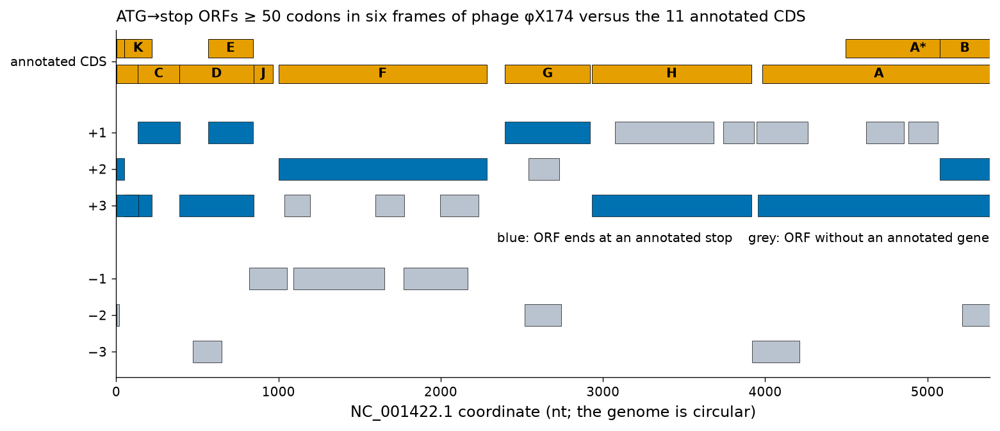
Try it yourself: a six-frame ORF finder
Web: paste NC_001422.1 into NCBI ORFfinder with minimal ORF length 150 nt and compare its output with the annotation. Python:
import os
from Bio import Entrez, SeqIO
from Bio.Seq import Seq
Entrez.email = os.environ.get("NCBI_EMAIL", "")
with Entrez.efetch(db="nuccore", id="NC_001422", rettype="gb", retmode="text") as h:
phage = SeqIO.read(h, "genbank") # bacteriophage phiX174, circular, 5386 nt
seq = str(phage.seq)
STOPS = {"TAA", "TAG", "TGA"}
def orfs_plus(s, min_codons=50):
"""ATG...stop ORFs on the given strand of a circular sequence; returns (start, stop, codons), 1-based."""
n, t = len(s), s + s[:3000] # append the beginning to read across the origin
found = []
for frame in range(3):
i = frame
while i + 3 <= len(t) and i < n:
if t[i:i+3] == "ATG":
j = i
while j + 3 <= len(t) and t[j:j+3] not in STOPS:
j += 3
if (j - i) // 3 >= min_codons:
found.append((i + 1, (j + 3 - 1) % n + 1, (j - i) // 3))
i = j + 3
else:
i += 3
return found
plus = orfs_plus(seq)
minus = orfs_plus(str(Seq(seq).reverse_complement()))
print("ORFs >= 50 codons: plus strand", len(plus), "| minus strand", len(minus))
annotated = [(int(f.location.parts[0].start) + 1, int(f.location.parts[-1].end))
for f in phage.features if f.type == "CDS"]
stops = {stop for _, stop, _ in plus}
exact = {(a, b) for a, b, _ in plus}
print("annotated CDS:", len(annotated), "| stop codon found:", sum(b in stops for a, b in annotated),
"| exact start and stop:", sum((a, b) in exact for a, b in annotated))Going further: how many chance ORFs should we expect?
In a random sequence of length L with equal base frequencies, an ATG occurs at a given position and frame with probability 1/64, and it is followed by at least 50 non-stop codons with probability (61/64)50 ≈ 0.091. The expected number of ATG→stop ORFs of at least 50 codons on both strands is therefore about 2 × L × (1/64) × 0.091; for L = 5,386 this is ≈ 15. The 16 unannotated ORFs found in φX174 are in line with this expectation, which shows why ORF length alone cannot distinguish real short genes from noise. Real genomes deviate from the random model (base composition, codon bias), which changes the number but not the conclusion.
Coding statistics: codon usage and third-position composition
Coding sequences differ statistically from non-coding DNA because the genetic code imposes a period-3 structure and because organisms use synonymous codons unequally (codon usage bias). Fickett's TESTCODE statistic, one of the first coding measures, exploited the asymmetry of base composition among the three codon positions;[41] modern gene finders use Markov models of codons or hexamers, which capture the same signals more completely. The β-globin CDS shows the signature clearly: G+C is 66.2 % at the first codon position, 36.5 % at the second and 65.5 % at the third, compared with 39.7 % in the untranslated regions of the same mRNA. The third position, where most changes are synonymous, reflects the G+C-rich isochore and the codon preferences of highly expressed human genes: of the 18 leucine codons of the β-globin CDS, 15 are CTG and 3 CTC, and the other four leucine codons (CTT, CTA, TTA, TTG) are not used at all; of the 18 valine codons, 13 are GTG. In φX174 the third position has only 41.2 % G+C, close to the genome average of 44.9 % for its coding sequences: codon bias is organism-specific, so coding statistics must be trained for each genome.
Try it yourself: codon-position composition
import os
from collections import Counter
from Bio import Entrez, SeqIO
Entrez.email = os.environ.get("NCBI_EMAIL", "")
with Entrez.efetch(db="nuccore", id="NM_000518", rettype="gb", retmode="text") as h:
rec = SeqIO.read(h, "genbank")
cds = str(next(f for f in rec.features if f.type == "CDS").extract(rec.seq))
codons = [cds[i:i+3] for i in range(0, len(cds), 3)]
for pos in range(3):
gc = 100 * sum(c[pos] in "GC" for c in codons) / len(codons)
print(f"GC at codon position {pos + 1}: {gc:.1f} %")
usage = Counter(codons)
print("leucine codons:", {c: usage[c] for c in ["CTG", "CTC", "CTT", "CTA", "TTG", "TTA"]})
print("valine codons :", {c: usage[c] for c in ["GTG", "GTC", "GTT", "GTA"]})Localisation of exons
In a eukaryotic gene, the primary transcript is processed by the spliceosome, which removes introns and joins exons. The spliceosome recognises short signals at the intron ends. The 5′ splice site (donor), at the exon→intron boundary, has the consensus MAG|GURAGU in RNA (M = A or C; R = A or G; | marks the boundary); the 3′ splice site (acceptor), at the intron→exon boundary, is preceded by a polypyrimidine tract and ends in YAG|G; a branch point with a conserved adenosine lies 18–40 nucleotides upstream of the acceptor. The invariant dinucleotides GT at the start and AG at the end of the intron (in DNA) form the GT–AG rule. Shapiro and Senapathy compiled the first large statistics of these sites in 1987.[42] We reproduced them with current data: in 119 human RefSeqGene records retrieved from NCBI (the first 120 records, sorted by accession, of 3–40-kb RefSeqGene entries; one had no multi-exon plus-strand mRNA), the first annotated mRNA of each gene has 816 introns, of which 809 (99.1 %) are GT–AG, 6 (0.7 %) GC–AG and one has other terminal dinucleotides. The donor logo (Figure 10b) shows G at intron position +1 in 99.9 % and T at +2 in 99.3 % of sites, with weaker preferences for A or G at +3, A at +4 (69.0 %) and G at +5 (82.5 %), and G at the last exon position (81.7 %). The acceptor logo shows the AG, a strong preference for C at −3, and a pyrimidine-rich tract upstream (78.1 % C or T between −20 and −3).
Ab initio exon prediction versus spliced alignment
Because the splice signals are short and degenerate, scanning a genome for GT…AG pairs finds an enormous number of false candidates; ab initio gene finders such as GENSCAN and AUGUSTUS combine splice-site models with coding statistics and exon-length distributions to choose among them.[26][27] When a transcript of the gene is available, the problem becomes much easier: a spliced alignment of the mRNA (or cDNA, EST or RNA-seq read) against the genome aligns each exon to its genomic copy and places the gaps at introns. Dedicated spliced aligners are Splign, used by NCBI to build RefSeq exon annotations (the /inference="alignment:Splign:2.1.0" qualifier of every exon in NM_000518.5),[43] BLAT, the fast aligner of the UCSC Genome Browser,[44] and minimap2, which aligns long cDNA and RNA reads (PacBio, Oxford Nanopore) to whole genomes with splice-aware scoring.[45] RNA-seq short reads are aligned with splice-aware mappers that produce the N operations of the SAM CIGAR string.
Worked example: recovering the three exons of HBB
We can reconstruct the exon structure of HBB with a general tool and one biological rule. First, blastn (BLAST+ 2.17.0, local alignment, discussed in Unit 4A) aligns the 628-nt mRNA NM_000518.5 with the 10,106-bp gene record NG_059281.1 and returns three high-scoring segment pairs (HSPs): mRNA 1–146 on gene 5001–5146 (99.3 % identity), mRNA 141–365 on 5271–5495 and mRNA 365–628 on 6345–6608 (both 100 %). The HSPs overlap by a few bases at each junction because the bases at the end of one exon happen to match the bases at the start of the following intron: a local aligner cannot know where the boundary is. Second, we slide each junction across the ambiguous region and keep the position at which the intron begins with GT and ends with AG while both exon pieces still match the mRNA exactly. At the first junction, four placements are equally good for the aligner (mRNA position 140, 141, 142 or 143 as the last base of exon 1) but only one, 142, gives GT…AG; at the second junction there are two candidates and again exactly one satisfies the rule.
Try it yourself: spliced alignment with BLAST and the GT–AG rule
Web: at NCBI BLAST, choose "Align two or more sequences", paste NM_000518.5 as query and NG_059281.1 as subject, and look at the three HSPs; or use Splign directly. In Colab (install BLAST+ first):
import os, subprocess
from Bio import Entrez, SeqIO
Entrez.email = os.environ.get("NCBI_EMAIL", "")
for acc in ["NM_000518", "NG_059281"]:
with Entrez.efetch(db="nuccore", id=acc, rettype="fasta", retmode="text") as h:
SeqIO.write(SeqIO.read(h, "fasta"), acc + ".fa", "fasta")
mrna = str(SeqIO.read("NM_000518.fa", "fasta").seq); genome = str(SeqIO.read("NG_059281.fa", "fasta").seq)
# 1) local alignment of the mRNA against the gene with BLAST+ (each exon gives one HSP)
out = subprocess.run(["blastn", "-query", "NM_000518.fa", "-subject", "NG_059281.fa", "-task", "blastn", "-evalue", "1e-10",
"-outfmt", "6 qstart qend sstart send pident"], capture_output=True, text=True).stdout
hsps = sorted(tuple(map(float, l.split("\t"))) for l in out.strip().splitlines())
hsps = [tuple(int(x) for x in h[:4]) for h in hsps]
print("HSPs (mRNA start-end -> gene start-end):", hsps)
# 2) slide each exon/exon junction until the intron starts with GT and ends with AG
exons = [list(hsps[0])]
for qs2, qe2, ss2, se2 in hsps[1:]:
up = exons[-1]
for k in range(qs2 - 13, up[1] + 13): # k = last mRNA base of the upstream exon
d = up[2] + (k - up[0]); a = ss2 + (k + 1 - qs2)
if mrna[up[0]-1:k] == genome[up[2]-1:d] and mrna[k:qe2] == genome[a-1:se2] \
and genome[d:d+2] == "GT" and genome[a-3:a-1] == "AG":
up[1], up[3] = k, d
exons.append([k + 1, qe2, a, se2]); break
for i, (qs, qe, gs, ge) in enumerate(exons, 1):
print(f"exon {i}: mRNA {qs}-{qe} = NG_059281 {gs}-{ge} ({ge - gs + 1} bp)")
for i in range(len(exons) - 1):
s, e = exons[i][3] + 1, exons[i+1][2] - 1
print(f"intron {i + 1}: {s}-{e} ({e - s + 1} bp) {genome[s-1:s+5]}...{genome[e-6:e]}")The result is identical to the annotation of NG_059281.1: exons 5001–5142, 5273–5495 and 6346–6608 (142, 223 and 263 bp), introns of 130 and 850 bp. The donor sites read CAG|GTTGGT (intron 1) and AGG|GTGAGT (intron 2), close to the consensus MAG|GTRAGT.
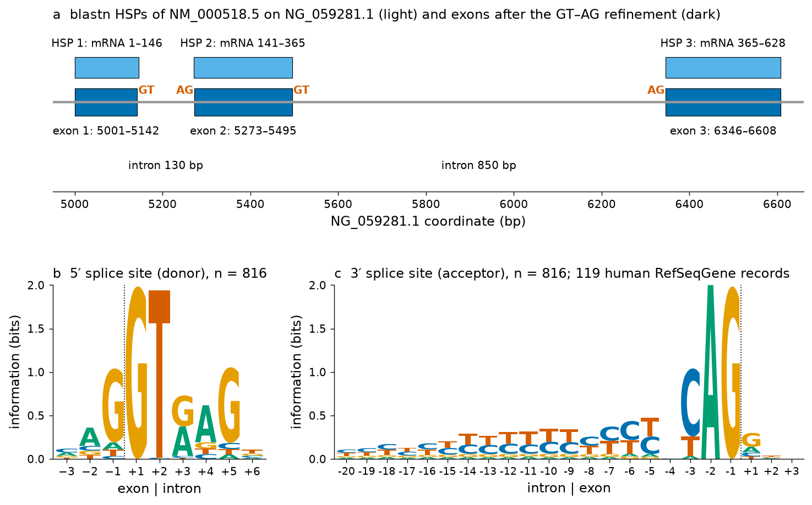
blastn -task blastn for NM_000518.5 against NG_059281.1 (light blue, labelled with their mRNA coordinates) overlap at the exon junctions; after the GT–AG refinement the exons (dark blue) abut exactly at the intron boundaries, and the introns begin with GT and end with AG (vermilion). (b, c) Logos of the 5′ (donor, positions −3 to +6) and 3′ (acceptor, −20 to +3) splice sites of 816 introns of 119 human RefSeqGene records, computed by us; the dotted line marks the exon–intron boundary. Letter heights are proportional to frequency × information content (no pseudocounts).Clinical connection: splicing mutations in β-thalassaemia
A large fraction of β-thalassaemia alleles alter splicing. Mutations of the invariant GT of intron 1 (IVS1-1 G>A) abolish the donor and cause β0-thalassaemia. The classic allele IVS1-110 G>A, common in Mediterranean populations, lies deep in intron 1 (position 110 of its 130 bases): in the reference sequence, positions 104–115 of intron 1 read CCTATTGGTCTA, and the G>A change creates the sequence CCTATTAG, a new acceptor-like AG preceded by pyrimidines, which the spliceosome uses in most transcripts, adding 19 intronic nucleotides to the mRNA and introducing a premature stop codon. This was one of the first human mutations shown to act through RNA splicing.[46] Splice-site models like the logos above are the basis of the in-silico splicing predictors used in clinical variant interpretation.
Dot plots
A dot plot (dot matrix, matriz de puntos) is the simplest way to compare two sequences, and still one of the most informative. Write one sequence along the horizontal axis and the other along the vertical axis, and place a dot at (i, j) whenever position i of the first sequence matches position j of the second. Regions of similarity then appear as diagonal lines; an insertion in one sequence shifts the diagonal sideways; an inverted copy appears as a line perpendicular to the main diagonal (if one sequence is compared with the reverse complement of the other); and repeats within a sequence produce parallel diagonals in a self-comparison. Gibbs and McIntyre introduced the diagram in 1970;[47] Maizel and Lenk introduced the window-and-stringency filter in 1981.[48]
Window and stringency
With single-base comparisons, a DNA dot plot is useless: two random bases match with probability 1/4, so a quarter of the matrix is black. The filter replaces each single comparison by a comparison of windows: a dot is placed at (i, j) only if at least s of the w aligned positions in the windows starting at i and j match (window w, stringency s). The expected number of chance dots falls steeply as w and s increase, while true similarities, which extend over many consecutive positions, survive. Large windows smooth out noise but lose short features; small windows show short features but more noise. For DNA, windows of 10–25 with stringencies of 70–100 % are typical; for proteins, windows of 2–10 scored with a substitution matrix.
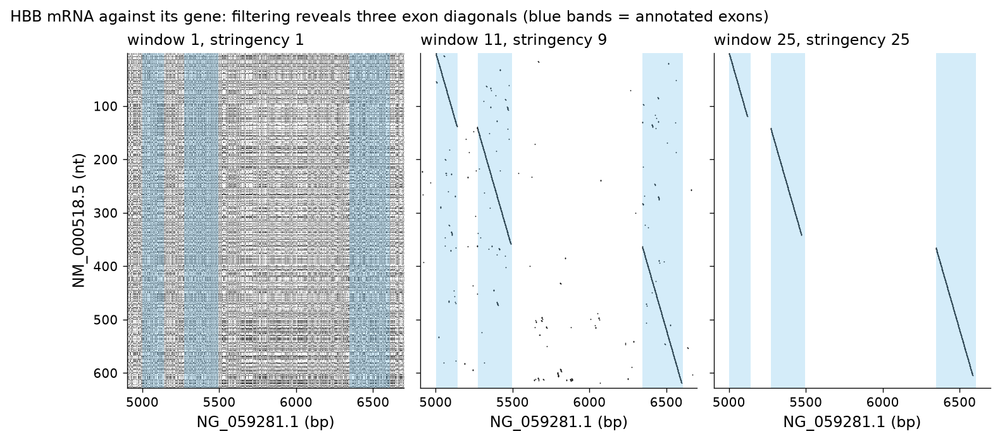
Try it yourself: a windowed dot plot in Python
Web alternatives: EMBOSS dotmatcher/dottup at EBI, or the dot-plot view of NCBI BLAST "Align two sequences".
import numpy as np
def dotplot(a, b, window=11, stringency=9):
"""Return (i, j) window starts where at least `stringency` of `window` aligned bases match."""
A = np.frombuffer(a.encode(), np.uint8); B = np.frombuffer(b.encode(), np.uint8)
match = (A[:, None] == B[None, :]).astype(np.int16)
n, m = match.shape
score = sum(match[k:n - window + 1 + k, k:m - window + 1 + k] for k in range(window))
return np.argwhere(score >= stringency)
from Bio import Entrez, SeqIO
import os
Entrez.email = os.environ.get("NCBI_EMAIL", "")
def get(acc):
with Entrez.efetch(db="nuccore", id=acc, rettype="fasta", retmode="text") as h:
return str(SeqIO.read(h, "fasta").seq)
mrna, gene = get("NM_000518"), get("NG_059281")[4900:6700]
for w, s in [(1, 1), (11, 9), (25, 25)]:
print(f"window {w:2d}, stringency {s:2d}: {len(dotplot(mrna, gene, w, s)):6d} dots")
# plot with: import matplotlib.pyplot as plt; P = dotplot(mrna, gene); plt.scatter(P[:,1], P[:,0], s=1)Self dot plots: repeats and inverted repeats
Comparing a sequence with itself always gives the main diagonal; everything else reveals internal structure. Figure 12 shows the 81.7-kb β-globin locus against itself. To compute a plot of 81,706 × 81,706 positions quickly, we indexed all 16-base words of the sequence and plotted a dot for every pair of identical words on the same strand (direct repeats, blue: 7,056 pairs) and for every word whose reverse complement occurs elsewhere (inverted repeats, vermilion: 2,094 pairs). The strongest off-diagonal feature is a pair of long parallel diagonals at the two γ-globin genes: HBG2 and HBG1 lie within a tandem duplication of about 5 kb (the genes start 4,924 bp apart), and the zoom in panel b shows that the whole duplicated unit, not only the genes, is nearly identical. Dozens of short dots scattered in rows and columns are interspersed repeats (Alu and L1 elements) present in many copies, in both orientations. A long inverted-repeat pair, between about 32–37 kb and 80–81 kb, is also visible in the full plot; inverted repeats deserve attention because they can fold into hairpins and mediate genomic inversions. Repeats matter for annotation because they cause false gene predictions, misassemblies and ambiguous read mapping, and genome pipelines therefore mask them before gene finding.
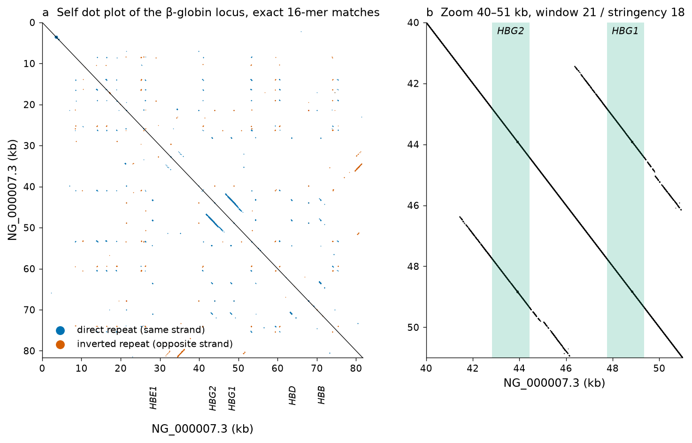
Key ideas of Section 3.2
- Formats: FASTA (sequence), GenBank/EMBL (sequence + annotation), GFF3/GTF and BED (annotation on a reference; BED is 0-based half-open), FASTQ (reads + Phred qualities), SAM/BAM/CRAM (alignments, CIGAR), VCF (variants on the plus strand).
- Gene finding combines intrinsic signals and statistics (ab initio: GeneMark, Glimmer, Prodigal; GENSCAN, AUGUSTUS) with extrinsic evidence (transcripts, proteins, conservation) in pipelines such as PGAP, the NCBI eukaryotic pipeline and Ensembl.
- Regulatory elements are short and degenerate. PWMs score them as sums of log-odds; most single-matrix hits in large regions are false positives, so position, conservation and chromatin data are needed.
- Coding sequences appear as long ORFs with codon-position statistics (high GC3 in human highly expressed genes); start codons, short genes and overlapping ORFs are the hard cases.
- Exons are best found by spliced alignment of transcripts; the GT–AG rule (99.1 % of 816 human introns analysed here) fixes the exact boundaries.
- Dot plots show similarity as diagonals; window and stringency remove noise; self-plots reveal duplications and inverted repeats.
Section 3.3Annotation of protein sequences
Curriculum: «Anotación de secuencias proteicas. Determinación de secuencias proteicas. Determinación de sus parámetros fisicoquímicos. Puntos de corte de proteasas. Lugares de modificación post-traduccional. Secuencias señal. Perfil hidrofóbico y regiones transmembrana. Dominios.» — Annotation of protein sequences. Determination of protein sequences. Determination of their physicochemical parameters. Protease cleavage sites. Post-translational modification sites. Signal sequences. Hydrophobicity profile and transmembrane regions. Domains.
From a protein sequence alone one can predict size and charge, light absorption, protease cleavage, candidate modification sites, secretion, membrane topology and domain families, each with its own reliability. Haemoglobin β (P68871) is the main example; preproinsulin (P01308), erythropoietin (P01588) and the β2-adrenergic receptor (P07550) illustrate what haemoglobin cannot.
How protein sequences are determined
Protein sequences reach the databases by two routes. The first, historically, was direct sequencing of the purified protein. Insulin (Sanger, 1945–1955) and the haemoglobin chains (around 1960) were sequenced this way: Edman degradation identifies one N-terminal residue at a time, and long chains were cut into overlapping peptides that were sequenced and assembled. Today, direct determination is done by tandem mass spectrometry (MS/MS): the protein is digested (usually with trypsin), the peptides are separated by liquid chromatography and fragmented in the mass spectrometer, and the fragment masses are matched against the peptides predicted from a sequence database. This is why in-silico digestion, treated below, is a daily tool of proteomics. Mass spectrometry also detects what DNA cannot reveal: removed initiator methionines, signal peptides and propeptides, and post-translational modifications.
The second route, which supplies more than 99 % of known protein sequences, is conceptual translation: the protein sequence is inferred by translating the CDS annotated in a nucleotide record with the appropriate genetic code. Every UniProtKB/TrEMBL entry, and most Swiss-Prot entries, are translations of this kind; the NCBI protein record NP_000509.1 is simply the translation of the CDS of NM_000518.5, as the first snippet of this unit verified. Conceptual translation is only as good as the gene model behind it: a wrong start codon, a missed exon or a sequencing error in the CDS becomes an error in the protein. The protein-existence line of UniProt records which kind of evidence supports each entry; P68871 has level 1, "evidence at protein level", because haemoglobin β was sequenced directly long before its gene was cloned.
Link to Unit 2
Unit 2, Section 2.5 explains the chemistry of Edman degradation and the principles of peptide mass spectrometry; here we use their results. Go to Unit 2.
Pitfall: the precursor is not the mature protein
The translated sequence in a database is the primary translation product. The functional protein may lack the initiator methionine (haemoglobin β, residues 2–147), a signal peptide (secreted proteins), propeptides (insulin loses its C peptide) and may carry modifications. Parameters computed from the precursor sequence describe a molecule that may not exist in the cell; check the CHAIN feature in UniProt and compute on the mature chain when that is what you will measure.
Physicochemical parameters
Expasy ProtParam, the SIB web tool that has served biochemists since the 1990s, computes a standard set of parameters from a sequence;[49] Biopython's ProteinAnalysis class implements the same set.[50] We computed them for haemoglobin β both ways, for the 147-residue precursor and for the 146-residue mature chain, submitting the same sequences to the Expasy server on 18 October 2026:
| Parameter | Precursor, Biopython | Precursor, Expasy | Mature, Biopython | Mature, Expasy |
|---|---|---|---|---|
| Number of residues | 147 | 147 | 146 | 146 |
| Average molecular weight (Da) | 15998.21 | 15998.41 | 15867.01 | 15867.22 |
| Theoretical pI | 6.74 | 6.74 | 6.81 | 6.81 |
| ε280, all Cys reduced (M−1 cm−1) | 15470 | 15470 | 15470 | 15470 |
| ε280, all Cys pairs as cystines | 15595 | 15595 | 15595 | 15595 |
| Instability index | 6.16 | 6.16 | 6.13 | 6.13 |
| Aliphatic index | 93.47 | 93.47 | 94.11 | 94.11 |
| GRAVY | 0.014 | 0.014 | 0.001 | 0.001 |
The two implementations agree to the last printed digit for every parameter except the molecular weight, where they differ by about 0.2 Da because they use slightly different tables of average atomic masses. Removing the initiator methionine lowers the mass by 131.2 Da, raises the theoretical pI from 6.74 to 6.81 (the N-terminal amino group of valine has a higher pK than that of methionine in the Bjellqvist pK set) and, in the Expasy N-end-rule estimate, raises the predicted half-life in mammalian reticulocytes from 30 h (N-terminal Met) to 100 h (N-terminal Val). The meaning of each parameter follows.
Molecular weight
The computed mass of the mature β chain, 15,867 Da, is the mass of the polypeptide alone; the functional haemoglobin tetramer α2β2 also carries four haem groups, and the measured mass of a protein includes any modifications.
Isoelectric point
The net charge of a protein at a given pH is the sum of the partial charges of its ionisable groups (N- and C-termini, and the side chains of Asp, Glu, Cys, Tyr, His, Lys and Arg), each given by the Henderson–Hasselbalch equation. The isoelectric point (pI) is the pH at which the net charge is zero; it is found numerically by bisection.
Clinical connection: why HbS migrates differently
Replacing Glu6 of the mature chain by Val removes one negative charge. With the same method, the theoretical pI of the β chain rises from 6.81 (HbA) to 7.26 (HbS; Expasy gives the same value), and to 7.98 for HbC (Glu6Lys), and the computed net charge at pH 8.6, the pH of classical alkaline haemoglobin electrophoresis, changes from −3.02 to −2.02 and −1.06 per β chain. Because each tetramer contains two β chains, HbS and HbC are less negatively charged than HbA and migrate more slowly towards the anode. This charge difference is the basis of haemoglobin electrophoresis, isoelectric focusing and cation-exchange HPLC, the methods used in newborn screening for sickle-cell disease (Unit 2), and it is how Linus Pauling's group first showed in 1949 that sickle-cell anaemia is a "molecular disease".[52] Note that the theoretical pI of a single chain is not the measured pI of the haemoglobin tetramer.
Extinction coefficient
Proteins absorb ultraviolet light at 280 nm mainly through tryptophan and tyrosine, with a small contribution from disulfide bonds (cystines). Pace and colleagues derived average contributions from measured proteins:[53][54]
The prediction is typically within a few per cent of the measured value for proteins with several Trp residues and should not be used for proteins without Trp or Tyr, or for haemoproteins in their native state, whose haem absorbs strongly in the same region.
Instability index
Guruprasad and colleagues observed that some dipeptides occur more often in proteins with short half-lives in vivo than in stable proteins, and assigned each of the 400 dipeptides an instability weight (the DIWV table).[55]
Aliphatic index
GRAVY
The grand average of hydropathy is the mean of the Kyte–Doolittle hydropathy values of all residues (Section 3.3.6).[57] Positive values indicate an overall hydrophobic protein, negative values a hydrophilic one; soluble proteins usually have negative or near-zero values. Haemoglobin β (0.014) is balanced, as expected of a soluble protein with a hydrophobic haem pocket; integral membrane proteins usually have positive GRAVY (the β2-adrenergic receptor: 0.170).
Try it yourself: ProtParam on the web and in Python
Web: paste P68871 into Expasy ProtParam (it accepts a UniProt accession directly) and then the mature chain (delete the first M). Python:
import requests
from Bio.SeqUtils.ProtParam import ProteinAnalysis
seq = requests.get("https://rest.uniprot.org/uniprotkb/P68871.fasta", timeout=60).text.split("\n", 1)[1].replace("\n", "")
for label, s in [("precursor (with Met1)", seq), ("mature chain (Met1 removed)", seq[1:])]:
pa = ProteinAnalysis(s)
eps_red, eps_cys = pa.molar_extinction_coefficient()
aliphatic = 100 * (s.count("A") + 2.9 * s.count("V") + 3.9 * (s.count("I") + s.count("L"))) / len(s)
print(f"{label}: {len(s)} aa")
print(f" MW {pa.molecular_weight():.2f} Da | pI {pa.isoelectric_point():.2f} | "
f"e280 {eps_red} (reduced) / {eps_cys} (cystines) M-1 cm-1")
print(f" instability index {pa.instability_index():.2f} | aliphatic index {aliphatic:.2f} | GRAVY {pa.gravy():.3f}")Protease cleavage sites
Proteases and some chemicals cut proteins at characteristic residues. Predicting the fragments is needed to plan peptide mapping and mass spectrometry, to design protein constructs, to anticipate degradation, and to interpret limited proteolysis. The common reagents and their rules (the cleaved bond is written ↓):
| Reagent | Cleaves | Exception / note |
|---|---|---|
| Trypsin | after Lys or Arg (K↓, R↓) | not before Pro (the Keil rule); in practice trypsin is highly specific for K/R[58] |
| Chymotrypsin (high specificity) | after Phe, Tyr, Trp | not before Pro; the low-specificity form also cuts after Leu, Met and others |
| Lys-C (endoproteinase) | after Lys | produces longer peptides than trypsin |
| Glu-C (V8 protease, bicarbonate buffer) | after Glu | in phosphate buffer also after Asp |
| Cyanogen bromide (CNBr, chemical) | after Met | converts Met to homoserine lactone |
The mature β chain has 11 Lys and 3 Arg, none followed by proline, so trypsin cuts at 14 sites and releases 15 peptides; 11 of these have at least five residues and monoisotopic masses between 500 and 3,000 Da, the range best suited to MS/MS. Chymotrypsin (high specificity) cuts at 12 sites, Lys-C at 11, Glu-C at 8, and cyanogen bromide only once, after Met55, because the precursor's other methionine, the initiator Met1, has been removed (Figure 13). Web tools such as Expasy PeptideCutter give the same predictions with a graphical map.[49]
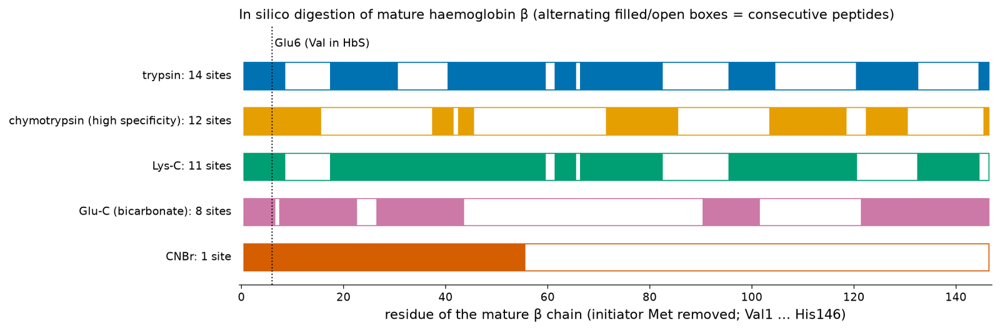
Try it yourself: an in-silico tryptic digest and the HbS peptide
import re, requests
from Bio.SeqUtils import molecular_weight
seq = requests.get("https://rest.uniprot.org/uniprotkb/P68871.fasta", timeout=60).text.split("\n", 1)[1].replace("\n", "")
mature = seq[1:] # initiator Met is removed in vivo
def digest(s, rule=r"(?<=[KR])(?!P)"): # trypsin: after K or R, not before P
cuts = [m.start() for m in re.finditer(rule, s) if 0 < m.start() < len(s)]
bounds = [0] + cuts + [len(s)]
return [s[bounds[i]:bounds[i + 1]] for i in range(len(bounds) - 1)]
peptides = digest(mature)
print(len(peptides), "tryptic peptides; first five:", peptides[:5])
sickle = mature[:5] + "V" + mature[6:] # Glu6Val
for name, s in [("HbA", mature), ("HbS", sickle)]:
p = digest(s)[0]
print(f"{name} N-terminal tryptic peptide {p}: monoisotopic mass {molecular_weight(p, 'protein', monoisotopic=True):.4f} Da")The N-terminal tryptic peptide shifts by −29.974 Da (the difference between the monoisotopic residue masses of Glu and Val), easily resolved by mass spectrometry. In 1956–1957, Vernon Ingram digested HbA and HbS with trypsin, separated the peptides by electrophoresis and chromatography (a "fingerprint") and found that a single peptide differed between them; its sequence revealed the replacement of one glutamic acid by valine — the first demonstration that a mutation changes one amino acid in a protein.[59]
Post-translational modification sites
After (or during) translation, proteins are chemically modified: groups are added to side chains or termini, the chain is cut, and disulfide bonds are formed. Hundreds of kinds of post-translational modification (PTM) are known. They change charge, stability, localisation, interactions and activity, and they are invisible in the gene. Annotation distinguishes clearly between modifications that have been observed and sites that are merely predicted.
Phosphorylation
Protein kinases transfer a phosphate from ATP to the hydroxyl group of Ser, Thr or Tyr; phosphatases remove it. Phosphorylation is the main currency of intracellular signalling. Each kinase recognises a short linear motif around the target residue (for example, protein kinase A prefers R-R-X-S/T), but motifs are weak and context-dependent, so predictors such as NetPhos use neural networks trained on known sites, and achieve useful but far from perfect accuracy.[60] Today most known sites come from large-scale phosphoproteomics by mass spectrometry. The UniProt entry of haemoglobin β lists phosphorylated Ser10, Thr13, Ser45, Thr51 and Thr88 with evidence code ECO:0007744 ("combinatorial computational and experimental evidence used in manual assertion"), i.e. detected in a large-scale proteomics study; their biological role in erythrocytes is unknown.
N-linked glycosylation and the N-X-S/T sequon
In the lumen of the endoplasmic reticulum, the oligosaccharyltransferase attaches a preformed oligosaccharide to the amide nitrogen of an asparagine that lies in the sequon N-X-S/T, where X can be any amino acid except proline.[61] The sequon is necessary but not sufficient: the asparagine must be reached by the enzyme, which means it must be on the luminal (later extracellular) side of the membrane and, in practice, in an accessible region of the nascent chain. A regular expression with a look-ahead, (?=N[^P][ST]), finds all sequons including overlapping ones.
Two real proteins show what a sequon scan can and cannot tell. Human erythropoietin (P01588), the kidney hormone that stimulates red-cell production, has three sequons in its precursor, N51 (NIT), N65 (NIT) and N110 (NSS), and UniProt annotates all three as N-glycosylated, plus an O-linked glycan on S153; in the numbering of the mature hormone (after removal of the 27-residue signal peptide) these are the classical sites Asn24, Asn38, Asn83 and Ser126 (Figure 14b). The β2-adrenergic receptor (P07550) has six sequons, but only two, N6 and N15 in the extracellular N-terminus, are annotated as glycosylated. Of the other four, N187 lies in the second extracellular loop and is not annotated as modified, whereas N244, N405 and N409 lie in cytoplasmic regions, where the glycosylation machinery never has access: their sequons are biologically meaningless. Haemoglobin β and preproinsulin contain no sequon at all.
Try it yourself: scan a glycoprotein for sequons and compare with UniProt
Web: submit P01588 to NetNGlyc and NetOGlyc (DTU Health Tech)[83] and compare their predictions with the "PTM / Processing" section of the UniProt entry. Python:
import re, requests
entry = requests.get("https://rest.uniprot.org/uniprotkb/P01588.json", timeout=60).json() # erythropoietin
seq = entry["sequence"]["value"]
sequons = [(m.start() + 1, seq[m.start():m.start() + 3]) for m in re.finditer(r"(?=N[^P][ST])", seq)]
print("N-X-S/T sequons (X != P):", sequons)
for f in entry["features"]:
if f["type"] in ("Signal", "Glycosylation"):
print(f'{f["type"]:13s} {f["location"]["start"]["value"]:>4}-{f["location"]["end"]["value"]:<4} {f.get("description", "")}')O-glycosylation, acetylation, glycation and disulfide bonds
O-linked glycosylation attaches sugars (mucin-type O-glycans start with N-acetylgalactosamine) to Ser or Thr in the Golgi apparatus; there is no simple sequon, and predictors such as NetOGlyc are statistical. Acetylation of the N-terminal amino group is one of the most common modifications of eukaryotic proteins; for haemoglobin β, UniProt annotates N-acetylvaline at the N-terminus (inferred by similarity to the bovine protein) and acetylated lysines at positions 60, 83 and 145. Glycation is a non-enzymatic reaction of glucose with free amino groups; UniProt annotates it under "Glycosylation" with the description "N-linked (Glc) (glycation)". On haemoglobin β it is observed at the N-terminal Val2 (forming HbA1c) and at Lys9, Lys18, Lys67, Lys121 and Lys145 (Figure 14a). Disulfide bonds between cysteines stabilise secreted and extracellular proteins: preproinsulin forms two interchain bonds (C31–C96 and C43–C109 in precursor numbering) between the B and A chains and one intrachain bond in the A chain (C95–C100), and erythropoietin has C34–C188 and C56–C60. Cytoplasmic proteins such as haemoglobin rarely form disulfides, because the cytosol is reducing; one of its two cysteines, Cys94 in UniProt numbering (Cys93 of the mature chain), is annotated as S-nitrosylated.
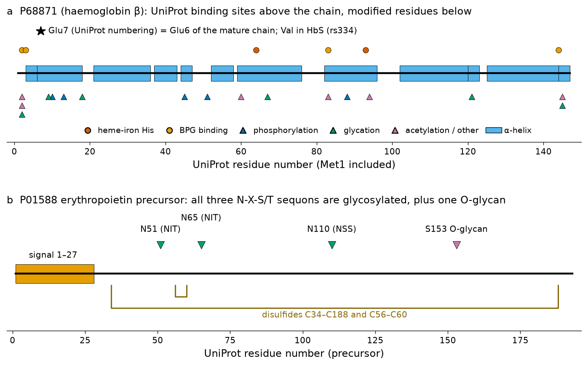
Clinical connection: HbA1c is a post-translational modification
The glycated haemoglobin HbA1c, whose fraction is measured to diagnose diabetes mellitus and to monitor glycaemic control over the previous two to three months, is haemoglobin whose β-chain N-terminal valine has reacted non-enzymatically with glucose — exactly the "N-linked (Glc) (glycation) valine; in Hb A1c" feature at position 2 of P68871. Its level integrates blood glucose over the lifetime of the erythrocyte. Conditions that shorten red-cell survival, such as sickle-cell disease, or variant haemoglobins that interfere with the assay, can make HbA1c misleading; this is one of many places where the annotation of a single protein record meets everyday clinical practice.
Prediction versus evidence
Before using a PTM annotation, check its evidence code in UniProt: ECO:0000269 (experimental, cited paper), ECO:0007744 (large-scale experimental data), ECO:0000250 (inferred by similarity to another protein; for example, the N-acetylvaline of human haemoglobin β is inferred from the bovine protein P02086), ECO:0000255 (sequence-model prediction). A sequon, a kinase motif or a predictor score is a hypothesis to be tested, not a fact.
Signal sequences
Proteins destined for secretion, for the plasma membrane or for organelles of the secretory pathway are synthesised with an N-terminal signal peptide that directs the ribosome–nascent-chain complex to the endoplasmic-reticulum membrane (via the signal recognition particle) and is cleaved off by signal peptidase. Signal peptides have no sequence consensus but a conserved architecture of three regions: a positively charged n-region (1–5 residues), a hydrophobic h-region (7–15 residues) that forms a helix in the membrane, and a polar c-region (3–7 residues) containing the cleavage site. Von Heijne showed that residues at positions −1 and −3 relative to the cleavage site must be small and neutral (the "−3, −1 rule"; Ala is most common, Gly, Ser, Cys and Thr are frequent) and built a weight matrix that predicted cleavage sites from these statistics.[62] The current standard predictor, SignalP 6.0, is a protein language model that recognises all five types of signal peptides (Sec/SPI, the classical type; Sec/SPII lipoprotein signal peptides; Tat/SPI, Tat/SPII; Sec/SPIII) and predicts their regions and cleavage sites.[63]
Human preproinsulin (P01308, 110 residues) is the textbook example. UniProt annotates the signal peptide as residues 1–24, MALWMRLLPLLALLALWGPDPAAA: n-region MALWMR (with Arg6), h-region LLPLLALLALW, c-region GPDPAAA, with Ala at −3 and Ala at −1, and cleavage between Ala24 and Phe25 (AAA↓FV). The remainder, proinsulin, is folded in the ER, forms its three disulfides and is cut in secretory granules at the dibasic sites RR (55–56) and KR (88–89) into the B chain (25–54), the C peptide (57–87) and the A chain (90–110). The hydropathy profile (Figure 15b) shows the h-region as a peak reaching 3.23 (window 7) around residue 13. Erythropoietin (P01588) has a longer, 27-residue signal peptide with a broad hydrophobic plateau (maximum 2.49) and the cleavage site VLG↓AP (Val at −3, Gly at −1).
Clinical connection: C peptide and proinsulin processing
Because the C peptide is released in equimolar amounts with insulin but is not present in pharmaceutical insulin, measuring serum C peptide distinguishes endogenous from injected insulin: it is used to assess residual β-cell function in diabetes and to investigate hypoglycaemia. Recombinant human insulin is produced in bacteria or yeast from engineered precursors precisely because the natural processing steps — signal peptide removal, disulfide formation and C-peptide excision — must be reproduced or bypassed.
Try it yourself: SignalP
Submit the sequences of P01308, P01588 and P68871 to SignalP 6.0 (organism group: Eukarya). Compare the predicted cleavage sites with the UniProt "Signal" features (1–24, 1–27, none) and note the region labels (n, h, c) that the server assigns.
Hydrophobicity profile and transmembrane regions
A hydropathy scale assigns each amino acid a number expressing its preference for a non-polar versus an aqueous environment. The scale of Kyte and Doolittle (1982) ranges from +4.5 (Ile) and +4.2 (Val) to −4.5 (Arg), combining water–vapour transfer free energies and the observed distribution of residues between the interior and the surface of proteins.[57] A hydropathy profile plots the mean value in a window of w residues, moved one residue at a time along the sequence:
The window size is a compromise between noise and resolution. Kyte and Doolittle found that a window of 19 residues — about the length of an α-helix spanning the 30 Å hydrophobic core of a membrane — separates membrane-spanning segments well, with peaks above 1.6 indicating likely transmembrane helices; small windows (7–11) reveal surface-exposed and buried segments of soluble proteins. For the β2-adrenergic receptor, a window of 7 produces a jagged profile with 16 separate stretches above 1.6, whereas a window of 19 produces seven broad hydrophobic peaks that coincide with the seven transmembrane helices annotated in UniProt from the crystal structure (Figure 15a).[64] Using the 1.6 threshold, six of the seven helices are detected; helix 7 (305–326) reaches only 0.99 because it contains the polar NPxxY motif (NPLIY, 322–326) that is conserved in the receptor family and essential for activation. Hydropathy alone therefore misses polar helices and cannot tell which side of the membrane each loop is on.
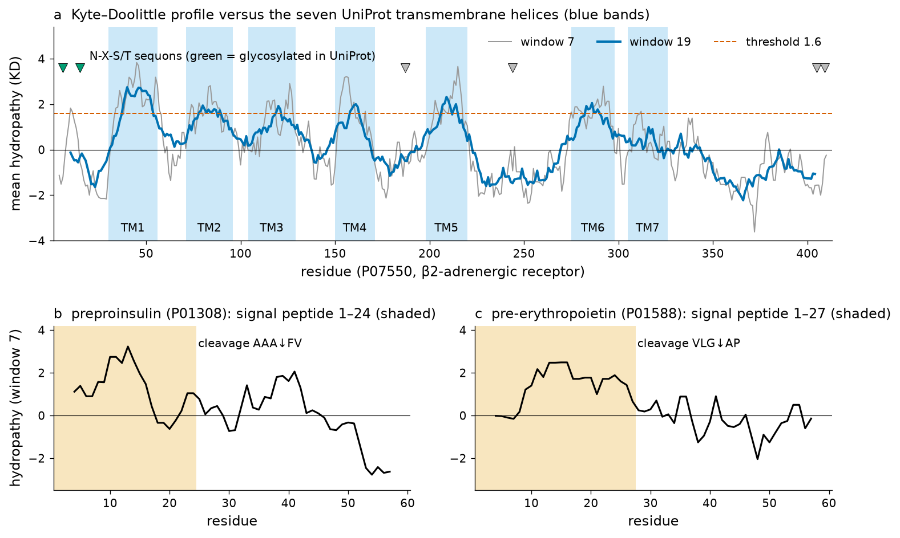
Topology and the positive-inside rule
The topology of a membrane protein is the number of transmembrane segments and the side of the membrane on which each loop lies. Von Heijne discovered that loops facing the cytoplasm are enriched in Lys and Arg relative to those facing the outside — the positive-inside rule — and used it, together with hydropathy, to predict topology.[65] The β2-adrenergic receptor obeys it clearly: its three cytoplasmic loops (57–70, 130–149 and 221–274) contain 19 Lys + Arg in 88 residues (21.6 %), whereas its three extracellular loops (97–103, 172–197 and 299–304) contain 3 in 39 residues (7.7 %). Hidden-Markov-model predictors such as TMHMM combine hydropathy, helix length and the positive-inside bias in one probabilistic model of topology;[66] DeepTMHMM replaces the hand-built features by a deep-learning model and also predicts β-barrel membrane proteins and signal peptides.[67] Distinguishing a signal peptide from a first transmembrane helix (both are hydrophobic N-terminal segments) is a classic difficulty, which modern tools address by modelling both together.
Try it yourself: hydropathy and topology
Web: paste P07550 into Expasy ProtScale (Kyte & Doolittle, window 19) and into DeepTMHMM, and compare both with the "Topology" section of the UniProt entry. Python:
import requests, numpy as np
KD = {"A": 1.8, "R": -4.5, "N": -3.5, "D": -3.5, "C": 2.5, "Q": -3.5, "E": -3.5, "G": -0.4, "H": -3.2, "I": 4.5,
"L": 3.8, "K": -3.9, "M": 1.9, "F": 2.8, "P": -1.6, "S": -0.8, "T": -0.7, "W": -0.9, "Y": -1.3, "V": 4.2}
entry = requests.get("https://rest.uniprot.org/uniprotkb/P07550.json", timeout=60).json() # beta2-adrenergic receptor
seq = entry["sequence"]["value"]
w = 19
profile = np.convolve([KD[a] for a in seq], np.ones(w) / w, mode="valid") # value for window centred at i + 10
centres = np.arange(w // 2 + 1, w // 2 + 1 + len(profile))
tm = [(f["location"]["start"]["value"], f["location"]["end"]["value"]) for f in entry["features"] if f["type"] == "Transmembrane"]
print("UniProt transmembrane helices:", tm)
for a, b in tm:
inside = profile[(centres >= a) & (centres <= b)]
print(f"TM {a:3d}-{b:3d}: max window-19 hydropathy {inside.max():.2f}")
loops = {"Cytoplasmic": [0, 0], "Extracellular": [0, 0]}
for f in entry["features"]:
if f["type"] == "Topological domain" and f["location"]["end"]["value"] < tm[-1][0] and f["location"]["start"]["value"] > tm[0][0]:
s = seq[f["location"]["start"]["value"] - 1: f["location"]["end"]["value"]]
loops[f["description"]][0] += s.count("K") + s.count("R"); loops[f["description"]][1] += len(s)
for side, (kr, n) in loops.items():
print(f"{side} loops: {kr} Lys+Arg in {n} residues ({100 * kr / n:.1f} %)")Clinical connection: a drug target defined by its topology
The β2-adrenergic receptor is the target of the bronchodilators used in asthma (salbutamol and other β2 agonists) and is blocked by non-selective β-blockers. Its ligands bind in a pocket formed by the transmembrane helices, accessible from the extracellular side, while the G protein binds the cytoplasmic loops and the DRY motif at the cytoplasmic end of helix 3 (D130-R131-Y132). Knowing the topology of a receptor is therefore the first step of structure-based drug design (Unit 5 and the companion text on computer-aided drug design).
Domains
A protein domain is a region of a protein that folds into a compact three-dimensional structure largely independently of the rest of the chain, and that is usually also a unit of function and of evolution: the same domain occurs, recombined with others, in many different proteins. Domains are typically 50–250 residues long. A protein's domain architecture — the ordered list of its domains — is a compact summary of what it is. Domains are recognised in a new sequence by comparison with models of known families: patterns (regular expressions such as PROSITE patterns), profiles and hidden Markov models built from multiple alignments (Pfam, SMART, PROSITE profiles), and fingerprints of several conserved motifs (PRINTS). How these models are built is the subject of Unit 4B.
The main domain resources are integrated in InterPro, which combines the signatures of thirteen member databases (Pfam, SMART, PROSITE patterns and profiles, CDD, PRINTS, PANTHER, CATH-Gene3D, SUPERFAMILY and others) into InterPro entries of defined type (family, domain, homologous superfamily, repeat, site), so that one query returns a consistent view.[68][69][70][71] Pfam itself is now served through the InterPro website and API.
For haemoglobin β, the InterPro API returned 12 matching entries on 18 October 2026 (Figure 16a): the InterPro domain IPR000971 (Globin, residues 3–147), integrating the Pfam domain PF00042 (Globin, 27–142) and the PROSITE profile PS01033 (Globin domain profile, 3–147); the family IPR002337 (Hemoglobin, beta-type, 8–146) and the CDD model cd08925 (8–146), which classify the chain more precisely within the globin superfamily; and the structural superfamilies of CATH-Gene3D and SUPERFAMILY. The globin domain is the whole protein: haemoglobin β is a single-domain protein, the "globin fold" of eight α-helices (A–H) that holds the haem. The β2-adrenergic receptor (15 entries; Figure 16b) has the Pfam domain PF00001 (7 transmembrane receptor, rhodopsin family, 50–326), which spans all seven helices, a PROSITE conserved-site signature (PS00237, 119–135) around the DRY motif, and PRINTS fingerprints that discriminate adrenergic receptors from other members of the family.
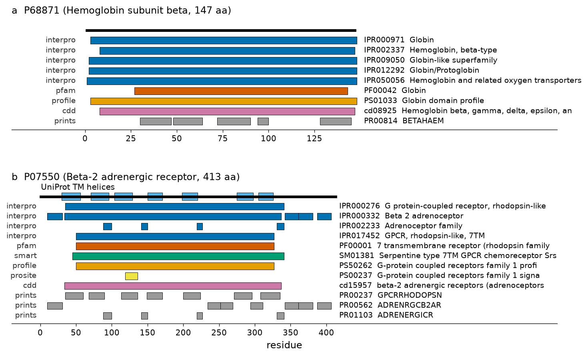
www.ebi.ac.uk/interpro/api/entry/all/protein/uniprot/<accession> (structural-superfamily and PANTHER entries are omitted for clarity), coloured by source database, with the fragments of each match. PRINTS fingerprints consist of several short motifs. In (b) the seven UniProt transmembrane helices are drawn above the chain for reference.Try it yourself: retrieve a domain architecture
Web: search P68871 at InterPro and open the "Entries" view; run InterProScan with an unannotated sequence (for example the PP393434.1 translation) to see how a partial protein is classified. Python, through the REST API:
import requests
url = "https://www.ebi.ac.uk/interpro/api/entry/all/protein/uniprot/P68871/?page_size=100"
for e in requests.get(url, timeout=60).json()["results"]:
m = e["metadata"]
spans = [(fr["start"], fr["end"]) for p in e["proteins"] for loc in p["entry_protein_locations"] for fr in loc["fragments"]]
if m["source_database"] in ("interpro", "pfam", "profile", "cdd"):
print(f'{m["source_database"]:9s} {m["accession"]:10s} {m["type"]:9s} {spans} {m["name"]}')Key ideas of Section 3.3
- Most protein sequences are conceptual translations; direct sequencing (Edman, now mass spectrometry) reveals processing and modifications that DNA cannot.
- MW, pI, ε280, instability index, aliphatic index and GRAVY are simple functions of composition (or dipeptides); Biopython and Expasy ProtParam give the same values. Compute them on the mature chain.
- Protease rules (trypsin: after K/R, not before P) predict peptides for mass spectrometry; the HbS mutation changes the mass of the first tryptic peptide by −29.974 Da.
- PTM sites: sequons (N-X-S/T, X ≠ P) are necessary but not sufficient for N-glycosylation; topology and evidence codes decide.
- Signal peptides have n-, h- and c-regions and small residues at −3 and −1; SignalP 6.0 predicts them.
- Kyte–Doolittle profiles with window 19 and threshold 1.6 locate most TM helices; the positive-inside rule gives the orientation; TMHMM/DeepTMHMM combine both.
- Domains are independent folding and evolutionary units; InterPro integrates Pfam, PROSITE, SMART, CDD and others. Haemoglobin β is a single globin domain (PF00042).
Running caseβ-globin from database record to annotated protein
The β-globin gene and sickle-cell disease run through the whole course. In Unit 2 you saw how the HbS mutation is detected by sequencing. Here the same gene has been followed through every annotation step of this unit; the box below collects the results in one place.
Case summary: HBB / haemoglobin β, as annotated in this unit
| Question | Answer (source) |
|---|---|
| Reference records | Gene: NG_059281.1 (RefSeqGene, 10,106 bp; LRG_1232); locus: NG_000007.3 (81,706 bp); chromosome: NC_000011.10, complement(5225464..5227071), band 11p15.4; mRNA: NM_000518.5 (628 nt, REVIEWED, MANE Select = ENST00000335295.4); protein: NP_000509.1 and UniProtKB P68871 (Swiss-Prot, entry version 219). |
| Oldest archival record | V00497, EMBL release 1 (9 June 1982); three synonymous differences from NM_000518.5. |
| Gene structure | 3 exons (142, 223, 263 bp) and 2 introns (130, 850 bp); recovered independently by BLAST + GT–AG (Section 3.2.5) and by the dot plot (Section 3.2.6). |
| Promoter | TATA box CATAAAA at −32 (TBP PWM window at −33, 90.5 %), CCAAT box at −76 (NF-Y), CACCC boxes at −93 and −108 (KLF1); no CpG island (obs/exp 0.143 from −1000 to +500); distal control by the LCR (HS1–HS5). |
| Coding sequence | CDS 51..494 of NM_000518.5 (147 codons with stop); in-frame upstream stop at 30..32; GC3 = 65.5 %; 15 of 18 Leu codons are CTG. |
| Sickle mutation | rs334; NC_000011.10:g.5227002T>A = NM_000518.5:c.20A>T = NP_000509.1:p.Glu7Val = Glu6Val of the mature chain (UniProt VAR_002863). |
| Protein parameters (mature chain, 146 aa) | MW 15,867 Da; pI 6.81 (HbS chain 7.26); ε280 15,470 M−1 cm−1; instability index 6.13 (stable); aliphatic index 94.11; GRAVY 0.001. |
| Processing and PTMs | Initiator Met removed; N-terminal Val glycated in HbA1c; phosphorylation, acetylation and glycation sites from proteomics; no N-glycosylation sequon; no signal peptide; no transmembrane segment (soluble cytoplasmic protein). |
| Proteolysis | Trypsin: 15 peptides; N-terminal peptide VHLTPEEK (951.5025 Da) becomes VHLTPVEK (921.5284 Da) in HbS. |
| Domain | Single globin domain: InterPro IPR000971 (3–147), Pfam PF00042 (27–142), PROSITE PS01033; family IPR002337 (Hemoglobin, beta-type). |
Three lessons follow from the case. First, each database answered a different question, and versioned identifiers plus cross-references made every result reproducible. Second, every annotation type had its own kind of evidence and its own error mode: the exons were confirmed by an independent transcript alignment, the promoter elements only by a statistical scan (which also produced many false positives elsewhere in the gene), the PTM sites by mass spectrometry with unknown function. Third, the single nucleotide change that causes sickle-cell disease is visible at every level — as a T>A in a VCF line, an A>T in a c. coordinate, a Glu→Val in UniProt, a change of one charge in the pI calculation and a −29.97 Da shift in a tryptic peptide — and each level corresponds to a diagnostic technique: DNA sequencing, protein electrophoresis or HPLC, and mass spectrometry.
Where the case goes next
In Unit 4A you will align haemoglobin β with its paralogues (δ, γ, ε and α) and search the databases with BLAST; in Unit 4B you will build a multiple alignment of globins, examine the Pfam PF00042 model and the PROSITE globin profile, and reconstruct the phylogeny that explains the gene duplications seen in the self dot plot of Figure 12; in Unit 5 you will place Val6 on the surface of the deoxy-HbS structure and see why it makes haemoglobin polymerise.
Practical workshopTaller: annotating a human gene from its database records
This guided session takes 90–120 minutes on a university computer with a web browser and a Google account (for Colab). Work in pairs. Each pair receives one human gene from the instructor's list (for example HBA1, INS, EPO, CFTR exon region or TP53); the expected results below are given for HBA1, the α-globin gene, so that you can check your procedure on it first. Record every accession.version and every parameter value you use.
Tasks
- Find the reference records (10 min). In NCBI Gene, search
HBA1[sym] AND human[orgn]. Write down the Gene ID, the chromosome location, the MANE Select transcript (NM_) and protein (NP_), and the RefSeqGene (NG_). Expected for HBA1: chromosome 16p13.3; the α-globin RefSeqGene is the locus record NG_000006.1 used in this unit. - Dissect the GenBank record (15 min). Open the NM_ record in GenBank format. Identify LOCUS, VERSION, the COMMENT status, the PRIMARY block, and the CDS location. Write the CDS coordinates, the length of the 5′ and 3′ UTRs and the protein_id.
- Compare with UniProt (15 min). Open the Swiss-Prot entry (for HBA1: P69905). Find the AC, the sequence version, the PE level, the CHAIN feature and the number of PDB cross-references. Expected: P69905 is 142 residues long; its chain starts at residue 2, because the initiator methionine is removed.
- Feature table and locations (10 min). In the NG_ record, find the mRNA and CDS features of your gene and write their
join(…)locations. In NCBI's Genome Data Viewer or in Ensembl, find the chromosome strand and write the location as it would appear on NC_0000NN withcomplementif necessary. - Exons by alignment (15 min). Use NCBI BLAST "Align two sequences" (blastn) with the NM_ as query and the NG_ as subject. From the HSPs, deduce the exon coordinates and verify that each intron starts with GT and ends with AG. Compare with the exon features of the NG_ record.
- Dot plot (10 min). In Colab, run the dot-plot snippet of Section 3.2.6 with your NM_ and the genomic region of your gene, with windows 11/9 and 25/25. Explain the pattern you see.
- Promoter and ORFs (15 min). Extract 300 bp upstream of the TSS and scan them with the JASPAR TBP matrix (snippet of Section 3.2.3). Is there a TATA box near −30? Run NCBI ORFfinder on the mRNA and identify the real CDS among the ORFs reported. For HBA1, the TATA-like element found in this unit is CATAAACC at −29, with a low score (2.81 bits): a weak TATA box.
- Protein parameters (10 min). Run Expasy ProtParam on the precursor and on the mature chain; report MW, pI, ε280, instability index and GRAVY. Check one value by hand (for example ε280 from the counts of Trp, Tyr and Cys).
- Protein annotation (15 min). Run PeptideCutter (trypsin), SignalP 6.0, DeepTMHMM and an InterPro search. Report the number of tryptic peptides, the presence or absence of a signal peptide and of TM helices, and the domain architecture with InterPro and Pfam accessions.
Deliverable
A two-page report (PDF) with: (1) a table of all accession.version identifiers used; (2) a schematic of the gene (exons, introns, UTRs, CDS) drawn to scale from your coordinates; (3) the promoter scan result with a critical comment on false positives; (4) a table of protein parameters (precursor and mature); (5) the domain architecture; and (6) one paragraph connecting your gene to a disease or a laboratory test, with one reference. Grading: correctness of identifiers and coordinates (40 %), quality of interpretation and critical comments (40 %), clarity of figures and tables (20 %).
Common mistakes seen in previous years
- Citing an accession without its version, or mixing GRCh37 and GRCh38 coordinates.
- Off-by-one errors when copying Biopython (0-based) coordinates into a report (1-based).
- Computing protein parameters on the precursor and comparing them with measurements on the mature protein.
- Reporting a predicted site (sequon, TATA-like word, phosphorylation motif) as if it were an observed one.
Self-assessmentQuestions with worked answers
Try each question before opening the answer. Questions 1–10 cover Section 3.1 and file formats, 11–16 Section 3.2, and 17–22 Section 3.3; several are numerical and require a calculator.
Q1. A colleague writes: "the variant is at position 70 of the HBB mRNA (NM_000518)". What is missing, and why does it matter?
The version. The accession NM_000518 has had several versions; the version number changes when the sequence changes (NM_000518.5 replaced NM_000518.4 in 2018). A position is only reproducible against a versioned sequence: NM_000518.5:c.20A>T (mRNA position 70) is unambiguous.
Q2. Explain the difference between a primary, a secondary and a curated database, giving one example of each.
Primary (archival): stores data as submitted, owned by the submitter, e.g. GenBank/ENA/DDBJ. Secondary: stores knowledge derived by analysing primary data, e.g. Pfam HMMs or PROSITE patterns. Curated/derived: experts or systematic procedures produce one reviewed record per molecule from primary data, e.g. RefSeq or UniProtKB/Swiss-Prot.
Q3. Why do GenBank, ENA and DDBJ contain the same records, and how can you tell which partner received the original submission?
Because the three INSDC partners exchange all new and updated records every day. The accession prefix reveals the partner that assigned it (for example, V and AK prefixes were assigned by EMBL and DDBJ respectively); the records are otherwise equivalent.
Q4. Is dbEST still a separate database? Where are ESTs today, and what has replaced them for studying expression?
No. NCBI merged EST records into the Nucleotide database (2018–2019) and retired the separate EST Entrez database. ESTs remain in the EST division of GenBank (78,202,766 records in release 274.0, searchable with gbdiv_est[PROP]). Expression is now studied by RNA-seq, with reads in SRA.
Q5. UniProtKB release 2026_03 contains 575,748 Swiss-Prot and 149,430,635 TrEMBL entries. What fraction is reviewed, and what does this imply for a protein from a newly sequenced species?
575,748 / (575,748 + 149,430,635) = 0.0038, i.e. about 4 per 1,000. A protein from a new species is almost certainly in TrEMBL with automatic annotation transferred by similarity; its functional annotation is a prediction until reviewed or tested.
Q6. In the GenBank record NM_000518.5, which line tells you (a) when the record was last modified, (b) which INSDC sequences the RefSeq was built from, (c) where the polyadenylation signal is?
(a) The date at the end of the LOCUS line (06-SEP-2026). (b) The COMMENT (derived from AK311825.1 and BU661647.1) and, base by base, the PRIMARY block (1–494 from AK311825.1; 495–628 from BU661647.1 bases 507–640). (c) The regulatory feature 602..607 with /regulatory_class="polyA_signal_sequence" (AATAAA).
Q7. Write the feature-table location of a CDS that lies on the minus strand and consists of two exons, 1200–1350 and 1500–1620. Which exon contains the start codon?
complement(join(1200..1350,1500..1620)). On the minus strand the 5′ end is at the highest coordinate, so the start codon is in the exon 1500–1620, at position 1620 (reading towards lower coordinates).
Q8. What do the symbols in CDS <255..383 mean in PP393434.1? Would you use this record to obtain the full β-globin protein?
The CDS begins before base 255 (it is partial at its 5′ end, beyond the sequenced region) and ends at 383, which is known exactly (the stop codon). The record encodes only the last 42 residues (from exon 3); it cannot be used to obtain the full protein.
Q9. Convert the GFF3 exon line 11 … exon 5225464 5225726 … - into BED, and explain the conversion.
chr11 5225463 5225726 … - . GFF3 is 1-based and inclusive; BED is 0-based and half-open, so the start decreases by one and the end stays the same. The interval length (263 bp) is end − start in BED and end − start + 1 in GFF3.
Q10. A FASTQ quality character is ? (ASCII 63) in Phred+33 encoding. What are Q and the error probability?
Q = 63 − 33 = 30; P = 10−30/10 = 0.001, i.e. one expected error in 1,000 bases.
Q11. Explain why ab initio gene prediction works better in bacteria than in humans, and name two tools for each.
Bacterial genes are uninterrupted ORFs with a ribosome-binding site, densely packed, so long ORFs and codon statistics identify them (GeneMark/GeneMarkS, Glimmer, Prodigal). Human genes are split into short exons in long introns, with weak splice and promoter signals and a small coding fraction, so many more parses are possible and evidence from transcripts and homologues is essential (GENSCAN, AUGUSTUS; pipelines combine them with RNA-seq and protein alignments).
Q12. A PWM column has counts A = 352, C = 0, G = 2, T = 35 (N = 389). Using a pseudocount s = √N distributed equally (background 0.25), compute the weight of C.
s = √389 = 19.72; pC = (0 + 19.72 × 0.25)/(389 + 19.72) = 4.93/408.72 = 0.0121; WC = log2(0.0121/0.25) = log2(0.0482) ≈ −4.37 bits. (This is column 3 of MA0108.2; the same value appears in the TBP weight matrix used in Section 3.2.3.)
Q13. The TBP matrix gave 19 windows above 85 % relative score in the 10-kb HBB gene record but only one in the real promoter. What does this teach, and how would you decide which hits are functional?
Short degenerate motifs occur by chance about once per 2I bases (I = information content, about 10 bits here), so single-matrix scans of large regions are dominated by false positives (the futility theorem). Functional sites are supported by position relative to the TSS, conservation across species, clustering with sites of co-operating factors, and experimental evidence (ChIP-seq, open chromatin, reporter assays, mutations).
Q14. Why is the HBB promoter not a CpG-island promoter, while GAPDH is? Give the numbers.
In −1000 to +500, HBB has 43.2 % G+C and CpG obs/exp 0.143 (10 CpGs), far below the 50 % / 0.6 thresholds; GAPDH has 67.3 % and 0.636 (108 CpGs), and an island from −572 to +1043. Housekeeping genes typically have unmethylated CpG-island promoters; tissue-specific genes such as HBB often have CpG-poor, TATA-containing promoters.
Q15. What is the probability that 100 random codons contain no stop codon? Why does this make ORF length useful but insufficient for gene finding?
(61/64)100 ≈ 0.0082. Long ORFs are therefore rare by chance and suggest coding, but genomes are long: about 15 ATG→stop ORFs of ≥ 50 codons are expected by chance in 5.4 kb (both strands), short real genes are missed, and starts are ambiguous (φX174: gene J missed, A start mis-called, 16 spurious ORFs).
Q16. BLAST returns HSPs 1–146 and 141–365 of the mRNA on gene positions 5001–5146 and 5271–5495. Why do they overlap, and how do you find the exact exon boundary?
The last bases of exon 1 happen to match the first bases of intron 1 (and the first bases of exon 2 match the end of intron 1), so a local aligner can extend either way. The boundary is the placement, among the equally good ones, where the intron begins with GT and ends with AG: last base of exon 1 = mRNA 142 (gene 5142), first base of exon 2 = mRNA 143 (gene 5273).
Q17. Calculate ε280 for a protein with 4 Trp, 6 Tyr and 2 disulfide bonds. Why should you not use the value for native haemoglobin?
4 × 5500 + 6 × 1490 + 2 × 125 = 22,000 + 8,940 + 250 = 31,190 M−1 cm−1. Native haemoglobin contains haem, which absorbs strongly in the UV and visible; the sequence-based formula accounts only for Trp, Tyr and cystines.
Q18. Why do the theoretical pI values of the β chain of HbA (6.81) and HbS (7.26) differ, and how is this exploited clinically?
Glu6→Val removes one acidic group, so the chain is less negatively charged at any pH above the Glu side-chain pK, and the pH of zero net charge rises. HbS (and HbC, with Lys) therefore separate from HbA in electrophoresis, isoelectric focusing and cation-exchange HPLC, the methods of newborn screening.
Q19. The β2-adrenergic receptor has six N-X-S/T sequons but only two are glycosylated. Explain using its topology.
N-glycosylation occurs only in the ER lumen, which corresponds to the extracellular side. N6 and N15 are in the extracellular N-terminus and are glycosylated; N244, N405 and N409 are cytoplasmic and can never be reached by oligosaccharyltransferase; N187 is extracellular but not annotated as glycosylated (sequons are necessary, not sufficient).
Q20. Identify the n-, h- and c-regions and the −3/−1 residues of the insulin signal peptide MALWMRLLPLLALLALWGPDPAAA↓FVNQ.
n-region MALWMR (positive Arg6), h-region LLPLLALLALW (hydrophobic), c-region GPDPAAA; −3 = Ala22, −1 = Ala24, both small and neutral, as the von Heijne rule requires; cleavage between Ala24 and Phe25.
Q21. A Kyte–Doolittle profile (window 19) of a receptor shows six peaks above 1.6, but UniProt annotates seven TM helices. Give a plausible reason and an alternative method.
One helix may be amphipathic or contain polar/charged residues (in the β2-adrenergic receptor, TM7 contains the NPxxY motif and reaches only 0.99). HMM- or deep-learning-based predictors that model helix length, loops and the positive-inside rule (TMHMM, DeepTMHMM) or an experimental structure give a better answer.
Q22. InterPro reports for P68871 the entries IPR000971, PF00042, PS01033, cd08925 and IPR002337. Explain the relationship between them.
PF00042 (Pfam HMM), PS01033 (PROSITE profile) and cd08925 (CDD model) are signatures from member databases. InterPro integrates equivalent signatures into InterPro entries: IPR000971 is the globin domain (to which PF00042 and PS01033 belong), and IPR002337 is the more specific family "Hemoglobin, beta-type". All describe the single globin domain that constitutes the whole chain.
Appendix AGlossary
- Accession number
- Stable identifier assigned to a database record when it first becomes public; never reused (e.g. NM_000518, P68871).
- Accession.version
- Accession plus a version number that increases when the sequence changes (NM_000518.5); the form to cite.
- Ab initio prediction
- Prediction of genes or other features from the sequence alone, using signals and statistical models.
- BED
- Tab-delimited interval format (chromosome, start, end, …) with 0-based, half-open coordinates.
- CDS
- Coding sequence: the part of a transcript translated into protein, from start to stop codon inclusive.
- CIGAR string
- Compact description of an alignment in SAM (M match, I insertion, D deletion, N intron, S soft clip).
- Codon usage bias
- Unequal use of synonymous codons, characteristic of each organism and of highly expressed genes.
- CpG island
- Region ≥ 200 bp with G+C > 50 % and CpG observed/expected > 0.6, typical of housekeeping promoters.
- Cross-reference (db_xref, DR)
- Pointer from one record to a record in another database, written database:identifier.
- dbEST
- NCBI database of expressed sequence tags (1993–2019); ESTs now reside in the EST division of GenBank.
- Domain
- Region of a protein that folds independently and is a unit of function and evolution.
- Dot plot
- Matrix comparison of two sequences in which similar regions appear as diagonals.
- Entrez
- NCBI's integrated search and retrieval system over linked databases, also accessible through the E-utilities.
- EST
- Expressed sequence tag: a single-pass read from one end of a cDNA clone.
- FASTQ format
- Read format with four lines per read: identifier, bases, separator and Phred qualities.
- Feature table
- Section of a sequence record that lists features as key, location and qualifiers.
- GFF3
- Nine-column, 1-based annotation format with typed features linked by ID and Parent attributes.
- GRAVY
- Grand average of hydropathy: mean Kyte–Doolittle value of all residues of a protein.
- GT–AG rule
- Introns almost always begin with GT and end with AG (99.1 % of 816 human introns analysed here).
- INSDC
- International Nucleotide Sequence Database Collaboration of GenBank, ENA and DDBJ, which exchange data daily.
- InterPro
- Integrated resource that combines protein-family and domain signatures from member databases.
- Isoelectric point (pI)
- pH at which the net charge of a molecule is zero.
- Instability index
- Dipeptide-based empirical index; values above 40 predict an unstable protein in vivo.
- MANE Select
- Single representative human transcript per protein-coding gene agreed by NCBI and EMBL-EBI.
- ORF
- Open reading frame: a stretch of codons, usually from ATG, without an in-frame stop codon.
- Positive-inside rule
- Cytoplasmic loops of membrane proteins are enriched in Lys and Arg.
- PWM
- Position weight matrix: table of log-odds scores for each base at each position of a binding site.
- RefSeq
- NCBI's curated, non-redundant reference sequences (NC_, NG_, NM_, NP_ …).
- Sequon
- N-X-S/T (X ≠ P) motif required for N-linked glycosylation.
- Signal peptide
- N-terminal targeting sequence (n-, h-, c-regions) removed by signal peptidase.
- Spliced alignment
- Alignment of a transcript to a genome that allows long gaps at introns.
- Swiss-Prot / TrEMBL
- Reviewed (manually curated) and unreviewed (automatic) sections of UniProtKB.
- TATA box
- Core-promoter element of consensus TATAWAWR about 30 bp upstream of the transcription start, bound by TBP.
- UniParc / UniRef
- UniProt's archive of all distinct protein sequences / clusters of sequences at 100, 90 and 50 % identity.
- VCF
- Variant Call Format: variants relative to a reference, on the plus strand, with genotypes.
Appendix BReferences and further reading
Primary literature
Every DOI below was verified against the Crossref API on 18 October 2026; bibliographic data were taken from the Crossref records.
- den Dunnen JT, Dalgleish R, Maglott DR, et al. HGVS Recommendations for the Description of Sequence Variants: 2016 Update. Human Mutation. 2016;37(6):564–569. doi:10.1002/humu.22981
- Arita M, Karsch-Mizrachi I, Cochrane G. The international nucleotide sequence database collaboration. Nucleic Acids Research. 2020;49(D1):D121–D124. doi:10.1093/nar/gkaa967
- International Nucleotide Sequence Database Collaboration. The international nucleotide sequence database collaboration (INSDC): enhancing global participation. Nucleic Acids Research. 2024. doi:10.1093/nar/gkae1058
- Sayers EW, Cavanaugh M, Frisse L, et al. GenBank 2025 update. Nucleic Acids Research. 2024;53(D1):D56–D61. doi:10.1093/nar/gkae1114
- Kodama Y, Ara T, Fukuda A, et al. DDBJ update in 2024: the DDBJ Group Cloud service for sharing pre-publication data. Nucleic Acids Research. 2024;53(D1):D45–D48. doi:10.1093/nar/gkae882
- O'Leary NA, Wright MW, Brister JR, et al. Reference sequence (RefSeq) database at NCBI: current status, taxonomic expansion, and functional annotation. Nucleic Acids Res. 2015;44(D1):D733–D745. doi:10.1093/nar/gkv1189
- Morales J, Pujar S, Loveland JE, et al. A joint NCBI and EMBL-EBI transcript set for clinical genomics and research. Nature. 2022;604(7905):310–315. doi:10.1038/s41586-022-04558-8
- Kato GJ, Piel FB, Reid CD, et al. Sickle cell disease. Nat Rev Dis Primers. 2018;4(1):18010. doi:10.1038/nrdp.2018.10
- Adams MD, Kelley JM, Gocayne JD, et al. Complementary DNA Sequencing: Expressed Sequence Tags and Human Genome Project. Science. 1991;252(5013):1651–1656. doi:10.1126/science.2047873
- Boguski MS, Lowe TMJ, Tolstoshev CM. dbEST — database for “expressed sequence tags”. Nat Genet. 1993;4(4):332–333. doi:10.1038/ng0893-332
- The UniProt Consortium, Bateman A, Martin MJ, et al. UniProt: the Universal Protein Knowledgebase in 2025. Nucleic Acids Research. 2024;53(D1):D609–D617. doi:10.1093/nar/gkae1010
- Bairoch A. The SWISS-PROT protein sequence database and its supplement TrEMBL in 2000. Nucleic Acids Research. 2000;28(1):45–48. doi:10.1093/nar/28.1.45
- Suzek BE, Wang Y, Huang H, et al. UniRef clusters: a comprehensive and scalable alternative for improving sequence similarity searches. Bioinformatics. 2014;31(6):926–932. doi:10.1093/bioinformatics/btu739
- Sayers EW, Beck J, Bolton EE, et al. Database resources of the National Center for Biotechnology Information in 2025. Nucleic Acids Research. 2024;53(D1):D20–D29. doi:10.1093/nar/gkae979
- Grosveld F, van Assendelft GB, Greaves DR, et al. Position-independent, high-level expression of the human β-globin gene in transgenic mice. Cell. 1987;51(6):975–985. doi:10.1016/0092-8674(87)90584-8
- Pearson WR, Lipman DJ. Improved tools for biological sequence comparison. Proc. Natl. Acad. Sci. U.S.A. 1988;85(8):2444–2448. doi:10.1073/pnas.85.8.2444
- Kent WJ, Sugnet CW, Furey TS, et al. The Human Genome Browser at UCSC. Genome Res. 2002;12(6):996–1006. doi:10.1101/gr.229102
- Cock PJA, Fields CJ, Goto N, et al. The Sanger FASTQ file format for sequences with quality scores, and the Solexa/Illumina FASTQ variants. Nucleic Acids Research. 2009;38(6):1767–1771. doi:10.1093/nar/gkp1137
- Ewing B, Green P. Base-Calling of Automated Sequencer Traces Using Phred. II. Error Probabilities. Genome Res. 1998;8(3):186–194. doi:10.1101/gr.8.3.186
- Li H, Handsaker B, Wysoker A, et al. The Sequence Alignment/Map format and SAMtools. Bioinformatics. 2009;25(16):2078–2079. doi:10.1093/bioinformatics/btp352
- Hsi-Yang Fritz M, Leinonen R, Cochrane G, et al. Efficient storage of high throughput DNA sequencing data using reference-based compression. Genome Res. 2011;21(5):734–740. doi:10.1101/gr.114819.110
- Danecek P, Auton A, Abecasis G, et al. The variant call format and VCFtools. Bioinformatics. 2011;27(15):2156–2158. doi:10.1093/bioinformatics/btr330
- Besemer J. GeneMarkS: a self-training method for prediction of gene starts in microbial genomes. Implications for finding sequence motifs in regulatory regions. Nucleic Acids Research. 2001;29(12):2607–2618. doi:10.1093/nar/29.12.2607
- Delcher A. Improved microbial gene identification with GLIMMER. Nucleic Acids Research. 1999;27(23):4636–4641. doi:10.1093/nar/27.23.4636
- Hyatt D, Chen GL, LoCascio PF, et al. Prodigal: prokaryotic gene recognition and translation initiation site identification. BMC Bioinformatics. 2010;11(1):119. doi:10.1186/1471-2105-11-119
- Burge C, Karlin S. Prediction of complete gene structures in human genomic DNA. Journal of Molecular Biology. 1997;268(1):78–94. doi:10.1006/jmbi.1997.0951
- Stanke M, Waack S. Gene prediction with a hidden Markov model and a new intron submodel. Bioinformatics. 2003;19(suppl_2):ii215–ii225. doi:10.1093/bioinformatics/btg1080
- Tatusova T, DiCuccio M, Badretdin A, et al. NCBI prokaryotic genome annotation pipeline. Nucleic Acids Res. 2016;44(14):6614–6624. doi:10.1093/nar/gkw569
- Aken BL, Ayling S, Barrell D, et al. The Ensembl gene annotation system. Database. 2016;2016:baw093. doi:10.1093/database/baw093
- Dyer SC, Austine-Orimoloye O, Azov AG, et al. Ensembl 2025. Nucleic Acids Research. 2024;53(D1):D948–D957. doi:10.1093/nar/gkae1071
- Miller IJ, Bieker JJ. A novel, erythroid cell-specific murine transcription factor that binds to the CACCC element and is related to the Krüppel family of nuclear proteins. Mol. Cell. Biol. 1993;13(5):2776–2786. doi:10.1128/MCB.13.5.2776
- Myers RM, Tilly K, Maniatis T. Fine Structure Genetic Analysis of a β-Globin Promoter. Science. 1986;232(4750):613–618. doi:10.1126/science.3457470
- Gardiner-Garden M, Frommer M. CpG Islands in vertebrate genomes. Journal of Molecular Biology. 1987;196(2):261–282. doi:10.1016/0022-2836(87)90689-9
- Takai D, Jones PA. Comprehensive analysis of CpG islands in human chromosomes 21 and 22. Proc. Natl. Acad. Sci. U.S.A. 2002;99(6):3740–3745. doi:10.1073/pnas.052410099
- The ENCODE Project Consortium, Abascal F, Acosta R, et al. Expanded encyclopaedias of DNA elements in the human and mouse genomes. Nature. 2020;583(7818):699–710. doi:10.1038/s41586-020-2493-4
- Rauluseviciute I, Riudavets-Puig R, Blanc-Mathieu R, et al. JASPAR 2024: 20th anniversary of the open-access database of transcription factor binding profiles. Nucleic Acids Research. 2023;52(D1):D174–D182. doi:10.1093/nar/gkad1059
- Bucher P. Weight matrix descriptions of four eukaryotic RNA polymerase II promoter elements derived from 502 unrelated promoter sequences. Journal of Molecular Biology. 1990;212(4):563–578. doi:10.1016/0022-2836(90)90223-9
- Wasserman WW, Sandelin A. Applied bioinformatics for the identification of regulatory elements. Nat Rev Genet. 2004;5(4):276–287. doi:10.1038/nrg1315
- Frangoul H, Altshuler D, Cappellini MD, et al. CRISPR-Cas9 Gene Editing for Sickle Cell Disease and β-Thalassemia. N Engl J Med. 2021;384(3):252–260. doi:10.1056/NEJMoa2031054
- Frangoul H, Locatelli F, Sharma A, et al. Exagamglogene Autotemcel for Severe Sickle Cell Disease. N Engl J Med. 2024;390(18):1649–1662. doi:10.1056/NEJMoa2309676
- Fickett JW. Recognition of protein coding regions in DNA sequences. Nucl Acids Res. 1982;10(17):5303–5318. doi:10.1093/nar/10.17.5303
- Shapiro MB, Senapathy P. RNA splice junctions of different classes of eukaryotes: sequence statistics and functional implications in gene expression. Nucl Acids Res. 1987;15(17):7155–7174. doi:10.1093/nar/15.17.7155
- Kapustin Y, Souvorov A, Tatusova T, et al. Splign: algorithms for computing spliced alignments with identification of paralogs. Biol Direct. 2008;3(1):20. doi:10.1186/1745-6150-3-20
- Kent WJ. BLAT—the BLAST-like alignment tool. Genome Res. 2002;12(4):656–664. doi:10.1101/gr.229202
- Li H. Minimap2: pairwise alignment for nucleotide sequences. Bioinformatics. 2018;34(18):3094–3100. doi:10.1093/bioinformatics/bty191
- Spritz RA, Jagadeeswaran P, Choudary PV, et al. Base substitution in an intervening sequence of a beta+-thalassemic human globin gene. Proc. Natl. Acad. Sci. U.S.A. 1981;78(4):2455–2459. doi:10.1073/pnas.78.4.2455
- Gibbs AJ, Mcintyre GA. The Diagram, a Method for Comparing Sequences. European Journal of Biochemistry. 1970;16(1):1–11. doi:10.1111/j.1432-1033.1970.tb01046.x
- Maizel JV, Lenk RP. Enhanced graphic matrix analysis of nucleic acid and protein sequences. Proc. Natl. Acad. Sci. U.S.A. 1981;78(12):7665–7669. doi:10.1073/pnas.78.12.7665
- Gasteiger E, Hoogland C, Gattiker A, et al. Protein Identification and Analysis Tools on the ExPASy Server. In: Walker JM, ed. The Proteomics Protocols Handbook. Humana Press. 2005;571–607. doi:10.1385/1-59259-890-0:571
- Cock PJA, Antao T, Chang JT, et al. Biopython: freely available Python tools for computational molecular biology and bioinformatics. Bioinformatics. 2009;25(11):1422–1423. doi:10.1093/bioinformatics/btp163
- Bjellqvist B, Hughes GJ, Pasquali C, et al. The focusing positions of polypeptides in immobilized pH gradients can be predicted from their amino acid sequences. Electrophoresis. 1993;14(1):1023–1031. doi:10.1002/elps.11501401163
- Pauling L, Itano HA, Singer SJ, et al. Sickle Cell Anemia, a Molecular Disease. Science. 1949;110(2865):543–548. doi:10.1126/science.110.2865.543
- Pace CN, Vajdos F, Fee L, et al. How to measure and predict the molar absorption coefficient of a protein. Protein Science. 1995;4(11):2411–2423. doi:10.1002/pro.5560041120
- Gill SC, von Hippel PH. Calculation of protein extinction coefficients from amino acid sequence data. Analytical Biochemistry. 1989;182(2):319–326. doi:10.1016/0003-2697(89)90602-7
- Guruprasad K, Reddy BVB, Pandit MW. Correlation between stability of a protein and its dipeptide composition: a novel approach for predicting in vivo stability of a protein from its primary sequence. Protein Eng Des Sel. 1990;4(2):155–161. doi:10.1093/protein/4.2.155
- Ikai A. Thermostability and Aliphatic Index of Globular Proteins. The Journal of Biochemistry. 1980. doi:10.1093/oxfordjournals.jbchem.a133168
- Kyte J, Doolittle RF. A simple method for displaying the hydropathic character of a protein. Journal of Molecular Biology. 1982;157(1):105–132. doi:10.1016/0022-2836(82)90515-0
- Olsen JV, Ong SE, Mann M. Trypsin Cleaves Exclusively C-terminal to Arginine and Lysine Residues. Molecular & Cellular Proteomics. 2004;3(6):608–614. doi:10.1074/mcp.T400003-MCP200
- Ingram VM. Gene Mutations in Human Hæmoglobin: the Chemical Difference Between Normal and Sickle Cell Hæmoglobin. Nature. 1957;180(4581):326–328. doi:10.1038/180326a0
- Blom N, Gammeltoft S, Brunak S. Sequence and structure-based prediction of eukaryotic protein phosphorylation sites. Journal of Molecular Biology. 1999;294(5):1351–1362. doi:10.1006/jmbi.1999.3310
- Bause E. Structural requirements of N-glycosylation of proteins. Studies with proline peptides as conformational probes. Biochemical Journal. 1983;209(2):331–336. doi:10.1042/bj2090331
- von Heijne G. A new method for predicting signal sequence cleavage sites. Nucl Acids Res. 1986;14(11):4683–4690. doi:10.1093/nar/14.11.4683
- Teufel F, Almagro Armenteros JJ, Johansen AR, et al. SignalP 6.0 predicts all five types of signal peptides using protein language models. Nat Biotechnol. 2022;40(7):1023–1025. doi:10.1038/s41587-021-01156-3
- Cherezov V, Rosenbaum DM, Hanson MA, et al. High-Resolution Crystal Structure of an Engineered Human β2-Adrenergic G Protein–Coupled Receptor. Science. 2007;318(5854):1258–1265. doi:10.1126/science.1150577
- von Heijne G. Membrane protein structure prediction. Journal of Molecular Biology. 1992;225(2):487–494. doi:10.1016/0022-2836(92)90934-C
- Krogh A, Larsson B, von Heijne G, et al. Predicting transmembrane protein topology with a hidden markov model: application to complete genomes. Journal of Molecular Biology. 2001;305(3):567–580. doi:10.1006/jmbi.2000.4315
- Hallgren J, Tsirigos KD, Pedersen MD, et al. DeepTMHMM predicts alpha and beta transmembrane proteins using deep neural networks. bioRxiv (preprint). 2022. doi:10.1101/2022.04.08.487609
- Blum M, Andreeva A, Florentino LC, et al. InterPro: the protein sequence classification resource in 2025. Nucleic Acids Research. 2024;53(D1):D444–D456. doi:10.1093/nar/gkae1082
- Mistry J, Chuguransky S, Williams L, et al. Pfam: The protein families database in 2021. Nucleic Acids Research. 2020;49(D1):D412–D419. doi:10.1093/nar/gkaa913
- Letunic I, Khedkar S, Bork P. SMART: recent updates, new developments and status in 2020. Nucleic Acids Research. 2020;49(D1):D458–D460. doi:10.1093/nar/gkaa937
- Wang J, Chitsaz F, Derbyshire MK, et al. The conserved domain database in 2023. Nucleic Acids Research. 2022;51(D1):D384–D388. doi:10.1093/nar/gkac1096
Textbooks
- Pevsner J. Bioinformatics and Functional Genomics. 3rd ed. Wiley-Blackwell; 2015. — Detailed coverage of NCBI/EBI resources, gene finding and protein analysis; the closest textbook to this unit.
- Lesk AM. Introduction to Bioinformatics. 5th ed. Oxford University Press; 2019. — Accessible introduction; chapters on databases and genome annotation.
- Mount DW. Bioinformatics: Sequence and Genome Analysis. 2nd ed. Cold Spring Harbor Laboratory Press; 2004. — Classic treatment of dot plots, gene prediction and promoter analysis.
- Zvelebil M, Baum JO. Understanding Bioinformatics. Garland Science; 2008. — Good chapters on gene and protein-feature prediction.
- Baxevanis AD, Bader GD, Wishart DS, eds. Bioinformatics. 4th ed. Wiley; 2020. — Chapters on sequence databases, genome browsers and protein annotation by the developers of the resources.
Online resources and documentation
- National Center for Biotechnology Information. GenBank Flat File Release 274.0, Distribution Release Notes (gbrel.txt), 15 October 2026. ftp.ncbi.nlm.nih.gov/genbank/gbrel.txt (accessed 18 October 2026).
- NCBI Insights. Upcoming changes to EST and GSS databases. 30 July 2018. ncbiinsights.ncbi.nlm.nih.gov (accessed 18 October 2026).
- NCBI Insights. EST and GSS databases now retired. 25 July 2019. ncbiinsights.ncbi.nlm.nih.gov (accessed 18 October 2026).
- NCBI. Entrez Programming Utilities Help. www.ncbi.nlm.nih.gov/books/NBK25501/ (accessed 18 October 2026).
- UniProt Consortium. UniProtKB user manual (flat-file format and evidence codes). www.uniprot.org/help/ (accessed 18 October 2026).
- INSDC. The DDBJ/ENA/GenBank Feature Table Definition. www.insdc.org/submitting-standards/feature-table/ (accessed 18 October 2026).
- DTU Health Tech. Bioinformatic services (SignalP, DeepTMHMM, NetNGlyc, NetOGlyc, NetPhos). services.healthtech.dtu.dk (accessed 18 October 2026).